第3章さまざまな確率分布 — データのばらつき方の型
- 測定値のばらつきにはどんな「型」があるのか．合否の回数，検出器のカウント数，測定誤差，セラミックスの破壊強度は，それぞれどの分布で表すのが自然か．
- 分光のピークに現れる Lorentz 型の線形では，なぜ「平均」や「標準偏差」が役に立たないのか．測定を 1 万回繰り返しても，その平均が落ち着かないことがあるのか．
- 2 つの量が一緒にばらつくとき，片方の値を知ると，もう片方についての予想はどう変わるのか．
焼結体の密度を 10 個測っても，X 線回折（XRD）の検出器で同じ角度を数え直しても，値はそのたびに違う．ただしばらつき方は同じではない．密度は真の値の周りに左右対称に散らばるが，カウント数は 0 より小さくならず，平均が小さいと右に裾を引く．分光のピークの形をそのまま確率分布とみなすと，平均すら定まらない分布になる．
機械学習のモデルは，データのばらつき方について必ず何かを仮定している（最小二乗法は Gauss 分布のノイズを，ロジスティック回帰は Bernoulli 分布を仮定する）．本章では，こうした典型的な分布の型を，どれも同じ順序 —— 定義域，パラメーター，正規化，平均・分散とその存在条件 —— で読み解く．扱うのは，Bernoulli 分布・二項分布，カテゴリカル分布・多項分布，Poisson 分布，Gauss 分布（一変量と多変量），Cauchy 分布，Gamma 分布・Beta 分布，Student の t 分布，Dirichlet 分布・Weibull 分布である．多変量 Gauss 分布の条件付き分布と周辺分布の公式は，後の第8章（ベイズ線形回帰）と第12章（ガウス過程回帰）の土台になる．
- どの分布についても，定義域・パラメーター・正規化・平均と分散（とその存在条件）を確かめる手順を説明できる．
- 二項分布の平均 $N\mu$ と分散 $N\mu(1-\mu)$ を導き，二項分布の極限として Poisson 分布を導ける．計数測定の $\sqrt{\lambda}$ 則を使える．
- Gauss 分布の正規化・平均・分散を導き，標準化と 68–95–99.7 の規則で区間確率を計算できる．
- 多変量 Gauss 分布の等確率の楕円を共分散行列の固有値分解で説明し，2 次元の条件付き分布と周辺分布を平方完成で導ける．
- Cauchy 分布の平均・分散が存在しないことを積分で示し，標本平均が落ち着かない理由を説明できる．
- Gamma・Beta・t・Dirichlet・Weibull 分布の形とパラメーターの意味を説明し，Weibull プロットから Weibull 係数を求められる．
入門ルートで読む節：3.1，3.2，3.3，3.4，3.5，3.14．「詳しいルート」の印が付いた節は，初めて読むときは飛ばしてよい．入門ルートでは一変量 Gauss 分布まで読めば第4章へ進める．
3.1 分布を読むための項目 — 定義域・パラメーター・正規化・平均と分散
3.1.1 どの分布も同じ順序で読む
本章ではたくさんの分布が出てくる．一つひとつを別々に覚えるのは効率が悪い．そこで，どの分布も次の同じ項目で読むことにする．新しい分布に出会ったときも，この順に確かめれば迷わない．
- 定義域（とりうる値の範囲）：整数か実数か，負になれるか，上限があるか．カウント数は $\{0,1,2,\dots\}$，割合は $[0,1]$，強度は $[0,\infty)$ のように，量の性質が定義域を決める．
- パラメーター：分布の形を決める定数と，その許される範囲．位置（中心をずらす），尺度（幅を伸び縮みさせる），形（裾や偏りを変える）の 3 種類に分けて考えると見通しがよい．
- 正規化：和（離散）または積分（連続）が 1 になること（第2章 2.1 節）．分布の式の先頭にある定数は，ほとんどがこのための正規化定数である．
- 平均・分散と，その存在条件：$\Ex[x]$ と $\Var[x]$ を計算する．ただし，和や積分が収束しなければ平均や分散は存在しない．このことを必ず確かめる．
加えて，分布の「代表値」として平均のほかに中央値（累積分布関数 $F$ が $1/2$ になる点）と最頻値（密度が最大になる点），幅の目安として標準偏差のほかに半値全幅（密度が最大値の半分になる 2 点の間隔．分光では FWHM と略す）を使う．平均と標準偏差が存在しない分布でも，中央値と半値全幅は使える．これが 3.7 節の鍵になる．
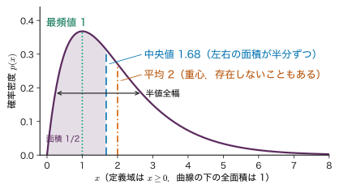
3.1.2 平均と分散が「存在する」とはどういうことか
第2章の定義2.6 では，期待値 $\Ex[f(x)]=\int f(x)\,p(x)\,\dd x$ は「和・積分が絶対収束するとき」に定義した．平均について言い直すと次のようになる．
定義3.1 平均・分散の存在
連続な確率変数 $x$ の密度を $p(x)$ とする．
\begin{equation} \int_{-\infty}^{\infty}\abs{x}\,p(x)\,\dd x\lt\infty \label{eq:3-mean-exists} \end{equation}のとき平均 $\Ex[x]=\int x\,p(x)\,\dd x$ が存在するという．さらに $\int x^{2}p(x)\,\dd x\lt\infty$ のとき分散 $\Var[x]=\Ex[x^{2}]-\Ex[x]^{2}$ が存在する（有限である）という．離散の場合は積分を和に置き換える．
$\abs{x}$ で確かめるのは，$\int x\,p(x)\,\dd x$ そのものは正負が打ち消し合い，範囲の取り方で違う値に収束しうるからである（3.7.2 項）．裾が $\abs{x}^{-2}$ 程度でしか減らない密度では $\abs{x}p(x)\sim\abs{x}^{-1}$ となり，その積分は対数的に発散する．3.7 節の Cauchy 分布がその例である．一般に，密度の裾が $\abs{x}^{-(k+1)}$ より速く減れば $\Ex[\abs{x}^{k}]$ は有限，そうでなければ発散する，と覚えておくとよい．
例題3.1 指数分布を項目どおりに読む
点欠陥が次に跳躍するまでの待ち時間や，放射性核の崩壊までの時間のように，「どの瞬間にも同じ割合 $\lambda$ で起こる事象」が起こるまでの時間 $t$ は，指数分布 $p(t\mid\lambda)=\lambda e^{-\lambda t}$（$t\ge0$）に従う．$\lambda=0.5\ \mathrm{h^{-1}}$ として，(1) 定義域とパラメーター，(2) 正規化，(3) 平均と分散，(4) 中央値，(5) 4 時間以上待つ確率を求めよ．
解答 (1) 定義域は $t\in[0,\infty)$．パラメーターは率 $\lambda\gt0$（単位 $\mathrm{h^{-1}}$）で，$1/\lambda$ が時間の尺度になる．
(2) $\int_0^\infty\lambda e^{-\lambda t}\,\dd t=\bigl[-e^{-\lambda t}\bigr]_0^\infty=0-(-1)=1$．
(3) 部分積分を使う．
$$ \begin{aligned} \Ex[t]&=\int_0^\infty t\,\lambda e^{-\lambda t}\,\dd t\\ &=\bigl[-t\,e^{-\lambda t}\bigr]_0^\infty+\int_0^\infty e^{-\lambda t}\,\dd t\\ &=0+\frac{1}{\lambda}=2\ \mathrm{h}. \end{aligned} $$同様に
$$ \begin{aligned} \Ex[t^{2}]&=\bigl[-t^{2}e^{-\lambda t}\bigr]_0^\infty+\int_0^\infty 2t\,e^{-\lambda t}\,\dd t\\ &=\frac{2}{\lambda}\Ex[t]=\frac{2}{\lambda^{2}} \end{aligned} $$なので，$\Var[t]=\dfrac{2}{\lambda^{2}}-\dfrac{1}{\lambda^{2}}=\dfrac{1}{\lambda^{2}}$ $=4\ \mathrm{h^{2}}$（標準偏差 2 h）．裾が指数関数で減るので，どの次数の $\Ex[t^{k}]$ も有限である．
(4) 累積分布関数は $F(t)=\int_0^t\lambda e^{-\lambda t'}\,\dd t'=1-e^{-\lambda t}$．$F(t)=1/2$ を解くと $t=\ln 2/\lambda\approx1.386\ \mathrm{h}$．中央値は平均 2 h より小さい（右に裾を引くため）．
(5) $P(t\ge4)=1-F(4)$ $=e^{-0.5\times4}=e^{-2}\approx0.135$．
3.2 Bernoulli 分布と二項分布 — 成功か失敗かを数える
3.2.1 Bernoulli 分布
試料が「合格か不合格か」，薄膜に「異相が出るか出ないか」のように，結果が 2 通りしかない試行を考える．一方を 1（成功），他方を 0（失敗）と書く．
定義3.2 Bernoulli 分布
$x\in\{0,1\}$，パラメーター $\mu\in[0,1]$（成功の確率）について
\begin{equation} \mathrm{Bern}(x\mid\mu)=\mu^{x}(1-\mu)^{1-x} \label{eq:3-bern} \end{equation}を Bernoulli（ベルヌーイ）分布という．$x=1$ を代入すると $\mu$，$x=0$ を代入すると $1-\mu$ になる．
指数の形に書いておくと，対数が $x\ln\mu+(1-x)\ln(1-\mu)$ と $x$ について 1 次式になり，尤度の計算（第4章）や 3.11 節の指数型分布族で扱いやすい．正規化は $\mathrm{Bern}(0\mid\mu)+\mathrm{Bern}(1\mid\mu)=(1-\mu)+\mu=1$．平均と分散は，和を 2 項書き出すだけで求まる．
$$ \begin{aligned} \Ex[x]&=0\cdot(1-\mu)+1\cdot\mu=\mu,\\ \Ex[x^{2}]&=0^{2}\cdot(1-\mu)+1^{2}\cdot\mu=\mu,\\ \Var[x]&=\Ex[x^{2}]-\Ex[x]^{2}=\mu-\mu^{2}=\mu(1-\mu). \end{aligned} $$分散は $\mu=1/2$ で最大 $1/4$ になり，$\mu$ が 0 や 1 に近いほど小さい．ほぼ必ず成功する（または失敗する）試行は，結果がほとんどばらつかない．
3.2.2 二項分布の導出
同じ Bernoulli 試行を独立に $N$ 回繰り返し，成功の回数を $m=x_1+x_2+\dots+x_N$ とする．$m$ の分布を求める．
特定の並び（たとえば最初の $m$ 回が成功，残りが失敗）が起こる確率は，独立性から各回の確率の積 $\mu^{m}(1-\mu)^{N-m}$ である．成功の位置が違う並びも，成功が $m$ 回・失敗が $N-m$ 回なら同じ確率になる．そうした並びは「$N$ 個の位置から成功の $m$ 個を選ぶ選び方」の数 $\binom{N}{m}=\dfrac{N!}{m!\,(N-m)!}$ だけある．互いに排反な並びの確率を足して，
定義3.3 二項分布
$m\in\{0,1,\dots,N\}$，パラメーター $N$（正の整数）と $\mu\in[0,1]$ について
\begin{equation} \begin{aligned}&\mathrm{Bin}(m\mid N,\mu)\\&=\binom{N}{m}\mu^{m}(1-\mu)^{N-m}\end{aligned} \label{eq:3-binom} \end{equation}を二項分布という．
第2章 2.7 節で尤度の例として使った式と同じものである（第2章では成功の確率を $\theta$ と書いた）．正規化は二項定理 $\sum_{m=0}^{N}\binom{N}{m}a^{m}b^{N-m}=(a+b)^{N}$ に $a=\mu$，$b=1-\mu$ を入れて $(\mu+1-\mu)^{N}=1$ となる．シミュレーター3.1 の画面では成功の回数を $x$ と書いているが，本文の $m$ と同じものである．
3.2.3 平均と分散の導出
式 \eqref{eq:3-binom} を使って $\sum_m m\,\mathrm{Bin}(m\mid N,\mu)$ を直接計算することもできるが，$m$ が独立な Bernoulli 変数の和であることを使うほうが見通しがよい．
定理3.1 二項分布の平均と分散
$m\sim\mathrm{Bin}(m\mid N,\mu)$ のとき，$\Ex[m]=N\mu$，$\Var[m]=N\mu(1-\mu)$．
導出
$m=\sum_{n=1}^{N}x_n$，$x_n\sim\mathrm{Bern}(x_n\mid\mu)$ は互いに独立とする．期待値の線形性（第2章 2.5 節）から
$$ \Ex[m]=\sum_{n=1}^{N}\Ex[x_n]=\sum_{n=1}^{N}\mu=N\mu . $$分散については，和の分散の公式 $\Var[x+y]=\Var[x]+\Var[y]+2\Cov[x,y]$ を $N$ 個に広げると
$$ \begin{aligned} \Var\!\left[\sum_{n}x_n\right]&=\sum_{n}\Var[x_n]\\ &\quad+2\sum_{n\lt n'}\Cov[x_n,x_{n'}] . \end{aligned} $$独立なら共分散は 0 なので第 2 項は消え，
$$ \Var[m]=\sum_{n=1}^{N}\mu(1-\mu)=N\mu(1-\mu). $$（導出終わり）
成功の割合 $m/N$ について言い直すと，$\Ex[m/N]=\mu$，$\Var[m/N]=\Var[m]/N^{2}=\mu(1-\mu)/N$ である（$\Var[ax]=a^{2}\Var[x]$）．割合の標準偏差は $\sqrt{\mu(1-\mu)/N}$ で，試行を 4 倍にしてやっと半分になる．これは第2章 2.8 節の $\sigma^{2}/N$ の特別な場合であり，第4章の演習4.2 で事後分布の幅と比べる．
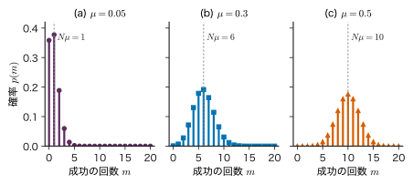
例題3.2 抜き取り検査の不良数
不良率 $\mu=0.05$ の工程から部品を 20 個抜き取る．各部品が不良かどうかは独立とする．(1) 不良が 0 個の確率，(2) 不良がちょうど 1 個の確率，(3) 不良が 2 個以上の確率，(4) 不良数の平均と標準偏差を求めよ．
解答 (1) $\mathrm{Bin}(0\mid20,0.05)=\binom{20}{0}0.05^{0}\,0.95^{20}$ $=0.95^{20}\approx0.3585$．
(2) $0.95^{19}\approx0.37735$ を使って $\mathrm{Bin}(1\mid20,0.05)=\binom{20}{1}0.05\times0.95^{19}$ $=20\times0.05\times0.3774=0.3774$．
(3) 余事象を使って $1-0.3585-0.3774=0.2642$．
(4) 定理3.1 より平均 $N\mu=20\times0.05=1$，分散 $N\mu(1-\mu)=20\times0.05\times0.95=0.95$，標準偏差 $\sqrt{0.95}\approx0.975$．「20 個中 0 個」という結果（確率 36 %）から「この工程に不良はない」とは言えない．
3.3 カテゴリカル分布と多項分布 — K 通りの結果
3.3.1 one-hot 表記とカテゴリカル分布
結果が $K$ 通りある試行を考える．たとえば，1 個の結晶粒がα相・β相・γ相のどれであるか（$K=3$），あるいは文章の次のトークンが語彙のどれであるか（第26章では $K$ が数万になる）．結果を整数 $k\in\{1,\dots,K\}$ で書くこともできるが，機械学習ではone-hot ベクトル（該当する成分だけが 1 のベクトル）を使うことが多い．
$$ \bm{x}=(x_1,\dots,x_K)^{\tp}\in\{0,1\}^{K},\qquad \sum_{k=1}^{K}x_k=1 . $$$K=3$ でβ相なら $\bm{x}=(0,1,0)^{\tp}$ である．
定義3.4 カテゴリカル分布
パラメーター $\bm{\mu}=(\mu_1,\dots,\mu_K)^{\tp}$，$\mu_k\ge0$，$\sum_k\mu_k=1$（$\mu_k$ は結果 $k$ の確率）について，one-hot ベクトル $\bm{x}$ の分布
\begin{equation} \mathrm{Cat}(\bm{x}\mid\bm{\mu})=\prod_{k=1}^{K}\mu_k^{x_k} \label{eq:3-cat} \end{equation}をカテゴリカル分布という．$K=2$ のとき Bernoulli 分布に一致する．
積の中で $x_k=1$ の因子だけが $\mu_k$，残りは $\mu_j^{0}=1$ なので，式 \eqref{eq:3-cat} は「結果 $k$ の確率は $\mu_k$」をひとまとめに書いたものである．対数をとると $\sum_k x_k\ln\mu_k$ となり，第9章の多クラス分類の交差エントロピーはこの形から出てくる．パラメーターは $K$ 個あるが，和が 1 という制約があるので自由に選べるのは $K-1$ 個である．
平均は成分ごとに $\Ex[x_k]=0\cdot(1-\mu_k)+1\cdot\mu_k=\mu_k$，すなわち $\Ex[\bm{x}]=\bm{\mu}$．共分散行列 $\bm{\Sigma}\in\R^{K\times K}$ は，$x_jx_k$ が $j\ne k$ では常に 0（同時に 1 にならない），$j=k$ では $x_k^{2}=x_k$ であることから
$$ \begin{aligned} \Cov[x_j,x_k]&=\Ex[x_jx_k]-\mu_j\mu_k\\ &=\begin{cases}\mu_k(1-\mu_k) & (j=k)\\ -\mu_j\mu_k & (j\ne k)\end{cases} \end{aligned} $$ $$ \bm{\Sigma}=\diag(\bm{\mu})-\bm{\mu}\bm{\mu}^{\tp} . $$非対角成分が負なのは，ある成分が 1 になれば他の成分は 0 にならざるを得ないからである．
3.3.2 多項分布
カテゴリカル試行を独立に $N$ 回行い，結果 $k$ が出た回数を $m_k=\sum_{n}x_{nk}$ とする（$\sum_k m_k=N$）．二項分布と同じ考え方で，特定の並びの確率は $\prod_k\mu_k^{m_k}$，そのような並びの数は $N$ 個を $m_1,\dots,m_K$ 個ずつのグループに分ける方法の数 $\dfrac{N!}{m_1!\cdots m_K!}$ である．
定義3.5 多項分布
\begin{equation} \begin{aligned}&\mathrm{Mult}(m_1,\dots,m_K\mid N,\bm{\mu})\\&=\frac{N!}{m_1!\,m_2!\cdots m_K!}\prod_{k=1}^{K}\mu_k^{m_k},\\&\sum_{k}m_k=N\end{aligned} \label{eq:3-mult} \end{equation}を多項分布という．$K=2$ のとき二項分布に一致する．
各 $m_k$ だけを見ると「結果 $k$ か，それ以外か」の二項分布 $\mathrm{Bin}(m_k\mid N,\mu_k)$ に従うので，$\Ex[m_k]=N\mu_k$，$\Var[m_k]=N\mu_k(1-\mu_k)$ である．また，カテゴリカル分布の共分散を $N$ 個の独立な試行について足すと $\Cov[m_j,m_k]=-N\mu_j\mu_k$（$j\ne k$）となる．
例題3.3 結晶粒の相の数
ある二相域の焼結体で，無作為に選んだ結晶粒がα相・β相・γ相である確率を $\bm{\mu}=(0.6,0.3,0.1)^{\tp}$ とする（教育用の設定）．10 個の粒を独立に調べる．(1) α相 6 個，β相 3 個，γ相 1 個となる確率，(2) 各相の個数の平均と分散，(3) α相とβ相の個数の共分散を求めよ．
解答 (1) 式 \eqref{eq:3-mult} に代入する．並びの数は $\dfrac{10!}{6!\,3!\,1!}=\dfrac{3628800}{720\times6\times1}=840$．確率の積は $0.6^{6}\times0.3^{3}\times0.1$ $=0.046656\times0.027\times0.1$ $=1.2597\times10^{-4}$．したがって $840\times1.2597\times10^{-4}\approx0.106$．最もありそうな組（平均の組と同じ）でも確率は 1 割程度である．
(2) $\Ex[m_k]=N\mu_k$ より 6，3，1．$\Var[m_k]=N\mu_k(1-\mu_k)$ より $10\times0.6\times0.4=2.4$，$10\times0.3\times0.7=2.1$，$10\times0.1\times0.9=0.9$．
(3) $\Cov[m_1,m_2]=-N\mu_1\mu_2$ $=-10\times0.6\times0.3=-1.8$．α相が多い標本ではβ相が少なくなる傾向が，負の共分散として表れる．
3.4 Poisson 分布 — まれな事象の回数
3.4.1 二項分布の極限としての導出
XRD の検出器に 10 秒間に入る光子の数を考える．X 線管から出た膨大な数 $N$ の光子のうち，ある 1 個がこの検出器に入る確率 $\mu$ はとても小さい．入る数は $\mathrm{Bin}(m\mid N,\mu)$ に従うが，$N$ も $\mu$ も分からず，分かっているのは平均の数 $\lambda=N\mu$ だけである．そこで $\lambda$ を一定に保ったまま $N\to\infty$（したがって $\mu=\lambda/N\to0$）とした極限を求める．
導出：二項分布から Poisson 分布へ
$\mu=\lambda/N$ を式 \eqref{eq:3-binom} に代入し，$m$ を固定して因子を 3 つに分ける．
$$ \begin{aligned} &\mathrm{Bin}\!\left(m\,\middle|\,N,\frac{\lambda}{N}\right)\\ &=\underbrace{\frac{N(N-1)\cdots(N-m+1)}{N^{m}}}_{(\mathrm{i})}\cdot\frac{\lambda^{m}}{m!}\\ &\quad\times\underbrace{\left(1-\frac{\lambda}{N}\right)^{N}}_{(\mathrm{ii})}\cdot\underbrace{\left(1-\frac{\lambda}{N}\right)^{-m}}_{(\mathrm{iii})} . \end{aligned} $$ここで $\binom{N}{m}=\dfrac{N(N-1)\cdots(N-m+1)}{m!}$ と，$(1-\mu)^{N-m}=(1-\mu)^{N}(1-\mu)^{-m}$ を使った．
(i) は $m$ 個の因子 $\dfrac{N}{N}\cdot\dfrac{N-1}{N}\cdots\dfrac{N-m+1}{N}$ の積で，$m$ が固定なら各因子は $N\to\infty$ で 1 に近づくので，積も 1 に近づく．
(ii) は指数関数の定義 $\lim_{N\to\infty}(1+a/N)^{N}=e^{a}$ に $a=-\lambda$ を入れて $e^{-\lambda}$ に近づく．
(iii) は指数 $-m$ が固定なので，$1-\lambda/N\to1$ から 1 に近づく．以上をまとめると
$$ \lim_{N\to\infty}\mathrm{Bin}\!\left(m\,\middle|\,N,\frac{\lambda}{N}\right)=\frac{\lambda^{m}e^{-\lambda}}{m!} . $$（導出終わり）
定義3.6 Poisson 分布
$m\in\{0,1,2,\dots\}$，パラメーター $\lambda\gt0$ について
\begin{equation} \mathrm{Pois}(m\mid\lambda)=\frac{\lambda^{m}e^{-\lambda}}{m!} \label{eq:3-pois} \end{equation}を Poisson（ポアソン）分布という．
定義域には上限がない（二項分布の上限 $N$ が無限大に行ったため）．正規化は指数関数の Taylor 展開 $e^{\lambda}=\sum_{m=0}^{\infty}\lambda^{m}/m!$ を使って $\sum_m\mathrm{Pois}(m\mid\lambda)=e^{-\lambda}e^{\lambda}=1$ である．
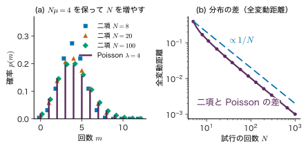
3.4.2 平均と分散はどちらも λ
定理3.2 Poisson 分布の平均と分散
$m\sim\mathrm{Pois}(m\mid\lambda)$ のとき $\Ex[m]=\Var[m]=\lambda$．
導出
平均：$m=0$ の項は 0 なので $m=1$ から始め，$m/m!=1/(m-1)!$ を使う．
$$ \begin{aligned} \Ex[m]&=\sum_{m=1}^{\infty}m\frac{\lambda^{m}e^{-\lambda}}{m!}=\lambda e^{-\lambda}\sum_{m=1}^{\infty}\frac{\lambda^{m-1}}{(m-1)!}\\ &=\lambda e^{-\lambda}e^{\lambda}=\lambda . \end{aligned} $$分散：$\Ex[m^{2}]$ を直接計算するより，$\Ex[m(m-1)]$ を計算するほうが楽である．$m=0,1$ の項は 0 で，$m(m-1)/m!=1/(m-2)!$ なので
$$ \Ex[m(m-1)]=\lambda^{2}e^{-\lambda}\sum_{m=2}^{\infty}\frac{\lambda^{m-2}}{(m-2)!}=\lambda^{2} . $$したがって $\Ex[m^{2}]=\Ex[m(m-1)]+\Ex[m]=\lambda^{2}+\lambda$，$\Var[m]=\lambda^{2}+\lambda-\lambda^{2}=\lambda$．二項分布の分散 $N\mu(1-\mu)=\lambda(1-\lambda/N)$ で $N\to\infty$ としても同じ結果になる．
（導出終わり）
3.4.3 計数測定の √λ 則
定理3.2 から，平均 $\lambda$ カウントの測定の標準偏差は $\sqrt{\lambda}$，相対的なばらつきは $\sqrt{\lambda}/\lambda=1/\sqrt{\lambda}$ である．100 カウントなら 10 %，1 万カウントなら 1 %．実際の測定では $\lambda$ は分からないので，得られたカウント数 $m$ を代入して標準偏差を $\sqrt{m}$ と見積もる．精度を 2 倍にするには計数を 4 倍（測定時間を 4 倍）にしなければならない．これが第2章 2.9 節で予告した「計数の $\sqrt{N}$ 則」である．
Poisson 分布が使えるのは，事象が独立に，一定の率で，まれに起こるときである．この条件が崩れる例は 3.13 節で述べる．
例題3.4 Poisson 分布の確率と，二項分布との比較
(1) 平均 3 カウントのバックグラウンドで，1 カウントも入らない確率と，2 カウント以下の確率を求めよ．(2) $N=50$，$\mu=0.08$ の二項分布と $\lambda=4$ の Poisson 分布について，$3\le m\le5$ となる確率をそれぞれ求め，平均と分散を比べよ．
解答 (1) $\mathrm{Pois}(0\mid3)=e^{-3}\approx0.0498$．2 カウント以下は
$$ e^{-3}\left(1+3+\frac{3^{2}}{2}\right)=8.5\,e^{-3}\approx0.423 . $$(2) 二項分布：$\sum_{m=3}^{5}\binom{50}{m}0.08^{m}0.92^{50-m}\approx0.5659$．Poisson 分布：
$$ \begin{aligned} &e^{-4}\left(\frac{4^{3}}{6}+\frac{4^{4}}{24}+\frac{4^{5}}{120}\right)\\ &=e^{-4}(10.667+10.667+8.533)\approx0.5470 . \end{aligned} $$平均はどちらも 4．分散は二項分布が $50\times0.08\times0.92=3.68$，Poisson 分布が 4 で，二項分布のほうが少し狭い．$\mu=0.08$ はまだ「十分にまれ」とは言えず，Poisson 近似には 2 % 程度の差が残る．
3.5 一変量 Gauss 分布 — 測定誤差の基本形
3.5.1 定義
測定誤差は，小さな独立な要因（温度の揺らぎ，電気的な雑音，読み取りの誤差など）がたくさん足し合わさってできていることが多い．第2章 2.8 節の中心極限定理によれば，分散が有限な独立な量の和は Gauss 分布に近づく．これが，Gauss 分布が測定誤差の「基本形」として使われる理由である．
定義3.7 Gauss 分布（正規分布）
$x\in\R$，パラメーター $\mu\in\R$（平均），$\sigma^{2}\gt0$（分散）について
\begin{equation} \begin{aligned}&\Normal(x\mid\mu,\sigma^{2})\\&=\frac{1}{\sqrt{2\pi\sigma^{2}}}\exp\!\left[-\frac{(x-\mu)^{2}}{2\sigma^{2}}\right]\end{aligned} \label{eq:3-gauss} \end{equation}を Gauss（ガウス）分布（正規分布）という．第 2 引数は分散である（標準偏差 $\sigma$ ではない）．$x$ に単位があれば $\mu$，$\sigma$ は $x$ と同じ単位，$\Normal$ の値は $x$ の単位の逆数を持つ．
指数の中は $x$ の 2 次式で，$x=\mu$ で最大，$\mu$ の左右で対称である．$\mu$ は位置，$\sigma$ は尺度のパラメーターで，形を変えるパラメーターはない．どの Gauss 分布も，$z=(x-\mu)/\sigma$ と目盛りを付け替えれば同じ曲線 $\Normal(z\mid0,1)$ になる．
3.5.2 正規化・平均・分散の導出
導出：正規化
Gauss 積分 $\displaystyle\int_{-\infty}^{\infty}e^{-u^{2}}\,\dd u=\sqrt{\pi}$（大学数学 第7章 7.5 で 2 重積分と極座標を使って証明した）を使う．$u=(x-\mu)/\sqrt{2\sigma^{2}}$ と置くと $\dd x=\sqrt{2\sigma^{2}}\,\dd u$ で，積分範囲は $(-\infty,\infty)$ のままである．
$$ \begin{aligned} \int_{-\infty}^{\infty}e^{-(x-\mu)^{2}/(2\sigma^{2})}\,\dd x&=\sqrt{2\sigma^{2}}\int_{-\infty}^{\infty}e^{-u^{2}}\,\dd u\\ &=\sqrt{2\pi\sigma^{2}} . \end{aligned} $$これを先頭の $1/\sqrt{2\pi\sigma^{2}}$ が打ち消すので，全体の積分は 1 になる．
（導出終わり）
導出：平均と分散
平均：$y=x-\mu$ と置くと $\Ex[x]=\Ex[y]+\mu$．$y\,e^{-y^{2}/(2\sigma^{2})}$ は奇関数で，裾が速く減るので積分は絶対収束し，正負が打ち消して $\Ex[y]=0$．よって $\Ex[x]=\mu$．
分散：$\Var[x]=\Ex[y^{2}]$ を部分積分で求める．$y\,e^{-y^{2}/(2\sigma^{2})}=-\sigma^{2}\dfrac{\dd}{\dd y}e^{-y^{2}/(2\sigma^{2})}$ に注意して，$y^{2}e^{-y^{2}/(2\sigma^{2})}=y\cdot y\,e^{-y^{2}/(2\sigma^{2})}$ と分けると
$$ \begin{aligned} &\int_{-\infty}^{\infty}y^{2}e^{-y^{2}/(2\sigma^{2})}\,\dd y\\ &=\Bigl[-\sigma^{2}y\,e^{-y^{2}/(2\sigma^{2})}\Bigr]_{-\infty}^{\infty}\\ &\quad+\sigma^{2}\int_{-\infty}^{\infty}e^{-y^{2}/(2\sigma^{2})}\,\dd y\\ &=0+\sigma^{2}\sqrt{2\pi\sigma^{2}} . \end{aligned} $$正規化定数 $1/\sqrt{2\pi\sigma^{2}}$ を掛けて $\Var[x]=\sigma^{2}$．パラメーターの名前どおり，$\mu$ が平均，$\sigma^{2}$ が分散である．
（導出終わり）
3.5.3 標準化と区間確率
$z=(x-\mu)/\sigma$ と置くと（標準化），$z$ は標準 Gauss 分布 $\Normal(z\mid0,1)$ に従う（第2章 2.6 節の変数変換：$p_z(z)=p_x(\mu+\sigma z)\cdot\sigma$）．その累積分布関数を
\begin{equation} \Phi(z)=\int_{-\infty}^{z}\Normal(z'\mid0,1)\,\dd z' \label{eq:3-Phi} \end{equation}と書く（細字の $\Phi$．第8章の計画行列 $\bm{\Phi}$ とは別物）．$\Phi$ は初等関数では書けないが，数値表や関数（誤差関数 $\operatorname{erf}$ を使って $\Phi(z)=\tfrac12[1+\operatorname{erf}(z/\sqrt2)]$）で求まる．区間確率は
\begin{equation} \begin{aligned}P(x_1\le x\le x_2)&=\Phi\!\left(\frac{x_2-\mu}{\sigma}\right)\\&\quad-\Phi\!\left(\frac{x_1-\mu}{\sigma}\right)\end{aligned} \label{eq:3-gauss-interval} \end{equation}である．対称性から $\Phi(-z)=1-\Phi(z)$ が成り立つ．平均から $\pm k\sigma$ の範囲に入る確率は $2\Phi(k)-1$ で，
これを 68–95–99.7 の規則という（図3.4）．95 % ちょうどの幅は $\pm1.96\sigma$ である．もう一つの幅の目安である半値全幅は，$\exp[-(x-\mu)^{2}/(2\sigma^{2})]=1/2$ を解いて $x-\mu=\pm\sigma\sqrt{2\ln2}$ なので，$2\sqrt{2\ln2}\,\sigma\approx2.355\,\sigma$ である．分光のピーク幅は半値全幅で報告されることが多いので，標準偏差との換算に使う．
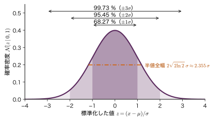
3.5.4 独立な Gauss 変数の和
後の章で何度も使う性質を述べておく．
定理3.3 独立な Gauss 分布の確率変数の和
$x_1\sim\Normal(\mu_1,\sigma_1^{2})$ と $x_2\sim\Normal(\mu_2,\sigma_2^{2})$ が独立なら，$x_1+x_2\sim\Normal(\mu_1+\mu_2,\ \sigma_1^{2}+\sigma_2^{2})$．定数 $a\ne0$，$b$ について $ax_1+b\sim\Normal(a\mu_1+b,\ a^{2}\sigma_1^{2})$．
平均と分散が足し算になることは第2章 2.5 節の公式から言える．新しい内容は「和もまた Gauss 分布である」という点である．これは次の特性関数を使うと 1 行で示せる．確率変数 $x$ の特性関数を $\varphi_x(k)=\Ex[e^{ikx}]$（$k$ は実数，$i$ は虚数単位）と定義する．これは密度 $p(x)$ の Fourier 変換（の符号を変えたもの）なので，特性関数が一致する 2 つの分布は同じ分布である．
導出：Gauss 分布の特性関数と和の分布
$x\sim\Normal(\mu,\sigma^{2})$ の特性関数は，指数の中を $x$ について平方完成すると
$$ \begin{aligned} &ikx-\frac{(x-\mu)^{2}}{2\sigma^{2}}\\ &=-\frac{\bigl(x-\mu-i\sigma^{2}k\bigr)^{2}}{2\sigma^{2}}+i\mu k-\frac{\sigma^{2}k^{2}}{2} \end{aligned} $$（右辺を展開すると左辺に戻る）．第 1 項の Gauss 積分は複素数だけずらしても $\sqrt{2\pi\sigma^{2}}$ のままである（大学数学 第30章 30.4 の Gauss 関数の Fourier 変換と同じ計算）．したがって
\begin{equation} \begin{aligned}&\varphi_x(k)\\&=\exp\!\left(i\mu k-\frac{\sigma^{2}k^{2}}{2}\right) .\end{aligned} \label{eq:3-gauss-cf} \end{equation}独立な $x_1,x_2$ について $\Ex[e^{ik(x_1+x_2)}]=\Ex[e^{ikx_1}]\,\Ex[e^{ikx_2}]$（第2章 2.3 節：独立なら積の期待値は期待値の積）なので
$$ \begin{aligned} &\varphi_{x_1+x_2}(k)\\ &=e^{i\mu_1k-\sigma_1^{2}k^{2}/2}\,e^{i\mu_2k-\sigma_2^{2}k^{2}/2}\\ &=\exp\!\left(i(\mu_1+\mu_2)k-\frac{(\sigma_1^{2}+\sigma_2^{2})k^{2}}{2}\right). \end{aligned} $$これは $\Normal(\mu_1+\mu_2,\sigma_1^{2}+\sigma_2^{2})$ の特性関数そのものである．
（導出終わり）
同じ考え方で，$x_n\sim\Normal(\mu,\sigma^{2})$ の i.i.d. 標本の平均 $\bar{x}$ は，どんな $N$ でも厳密に $\Normal(\mu,\sigma^{2}/N)$ に従う．3.7 節では，同じ議論で Cauchy 分布ではまったく違うことが起こるのを見る．
例題3.5 薄膜の厚さの規格
スパッタ法で作る薄膜の厚さ $x$ が $\Normal(x\mid200\ \mathrm{nm},\,(4\ \mathrm{nm})^{2})$ に従うとする（教育用の設定）．(1) 規格 $195\sim205\ \mathrm{nm}$ に入る割合，(2) $210\ \mathrm{nm}$ を超える割合を求めよ．(3) この膜の上に，厚さが $\Normal(50\ \mathrm{nm},(3\ \mathrm{nm})^{2})$ に従う膜を独立に重ねる．2 層の合計の厚さの分布を求めよ．$\Phi(1.25)=0.8944$，$\Phi(2.5)=0.99379$ を使ってよい．
解答 (1) 標準化すると $z_1=(195-200)/4=-1.25$，$z_2=(205-200)/4=1.25$．式 \eqref{eq:3-gauss-interval} と $\Phi(-z)=1-\Phi(z)$ から
$$ \begin{aligned} &\Phi(1.25)-\Phi(-1.25)\\ &=2\Phi(1.25)-1\\ &=2\times0.8944-1=0.7887 . \end{aligned} $$約 79 % が規格に入る．
(2) $z=(210-200)/4=2.5$ なので $1-\Phi(2.5)=1-0.99379=0.0062$（約 0.6 %）．
(3) 定理3.3 より，合計は $\Normal(200+50,\ 4^{2}+3^{2})=\Normal(250\ \mathrm{nm},\ 25\ \mathrm{nm^{2}})$，標準偏差は $5\ \mathrm{nm}$．標準偏差は $4+3=7$ ではなく $\sqrt{4^{2}+3^{2}}=5$ になる（独立なばらつきは分散で足す）．
シミュレーター3.1 分布の形と区間確率
本章の 8 種類の分布（二項，Poisson，Gauss，Cauchy，Gamma，Beta，Student の t，Weibull）の形を描き，区間に入る確率を累積分布関数の差 $F(x_2)-F(x_1)$ として求める装置である．平均・分散が存在しない分布では，その理由も表示する．
操作と観察
- 開いた直後の既定（1 つ目の分布「Gauss 分布」，平均 $\mu=0$，標準偏差 $\sigma=1$，区間 $[-1,1]$）のまま読み出しを見る → $P=\Phi(1.000)-\Phi(-1.000)$ $=0.8413-0.1587=0.6827$ と表示される．式 \eqref{eq:3-gauss-interval} と比べる．下の累積分布関数の図で，縦の矢印の長さが上の図の塗った面積と同じであることを確かめる．
- 区間のボタン「± 2 標準偏差」を押す → $P=0.9545$．続けて左端 $x_1$・右端 $x_2$ のスライダーを $\pm3$ に動かす → $0.9973$．読み出しの半値全幅 2.3548 を $2\sqrt{2\ln2}\,\sigma$ と比べる．
- 「比べる例」の「二項と Poisson（Nμ = λ）」を押す → 1 つ目が二項分布（試行の回数 $N=50$，成功の確率 $\mu=0.08$）になり，2 つ目の分布として $\lambda=4$ の Poisson 分布が破線で重なる．読み出しで平均 4.000 と 4.000，分散 3.680 と 4.000 を確かめ，区間 $[3,5]$ の確率 0.5659 と 0.5470 を例題3.4 (2) と比べる．
- 分布を「Gamma 分布」にして形 $a$ を 0.5，1，2，5 と動かす → $a\lt1$ では $x\to0$ で密度が発散し，$a=1$ で指数分布（例題3.1），$a$ が大きいほど山が右へ移って左右対称に近づく（3.8 節）．
操作後の問い
- 手順 1 の区間を $[-1.96,\,1.96]$ に近づけると，$P$ はいくつに近づくか．この幅を何と呼ぶか．
答えの例
$2\Phi(1.96)-1=0.9500$ に近づく．平均 $\pm1.96\sigma$ は Gauss 分布で確率 95 % を含む幅である．スライダーの刻みは表示範囲の約 1/200 なので，ちょうど 1.96 にならなくても 0.95 前後の値が読める．
- 手順 3 で，二項分布の分散が Poisson 分布の分散より小さいのはなぜか．$N$ を 200 に増やし，$\mu$ を $4/200=0.02$ に下げるとどうなるか．
答えの例
二項分布の分散は $N\mu(1-\mu)=\lambda(1-\mu)$ で，成功の上限 $N$ があるぶん Poisson 分布の $\lambda$ より $(1-\mu)$ 倍だけ小さい．$\mu=0.02$ にすると分散は $4\times0.98=3.92$ となって 4 に近づき，区間確率の差も小さくなる（3.4.1 項の極限）．
装置はパラメーターの範囲を制限している（たとえば二項分布の $N$ は 200 まで）が，式そのものはどの範囲でも同じである．
3.6 多変量 Gauss 分布 — 楕円，周辺分布，条件付き分布詳しいルート
3.6.1 定義と記号
焼結体の相対密度と硬さ，混晶の組成と格子定数のように，複数の量が一緒にばらつくことがある．$D$ 個の量をまとめた列ベクトル $\bm{x}=(x_1,\dots,x_D)^{\tp}\in\R^{D}$ の分布として，最も基本的なものが多変量 Gauss 分布である．
定義3.8 多変量 Gauss 分布
平均ベクトル $\bm{\mu}\in\R^{D}$ と，対称で正定値な共分散行列 $\bm{\Sigma}\in\R^{D\times D}$ について
\begin{equation} \begin{aligned}&\Normal(\bm{x}\mid\bm{\mu},\bm{\Sigma})\\&=\frac{1}{(2\pi)^{D/2}\abs{\bm{\Sigma}}^{1/2}}\\&\quad\times\exp\Bigl[-\frac12(\bm{x}-\bm{\mu})^{\tp}\\&\qquad\qquad\ \bm{\Sigma}^{-1}(\bm{x}-\bm{\mu})\Bigr]\end{aligned} \label{eq:3-mvn} \end{equation}を多変量 Gauss 分布という．$\abs{\bm{\Sigma}}$ は行列式である．$D=1$ のとき式 \eqref{eq:3-gauss} に一致する．
指数の中の 2 次形式
\begin{equation} \Delta^{2}=(\bm{x}-\bm{\mu})^{\tp}\bm{\Sigma}^{-1}(\bm{x}-\bm{\mu}) \label{eq:3-mahal} \end{equation}の平方根 $\Delta$ を Mahalanobis（マハラノビス）距離という．密度は $\Delta$ だけで決まるので，$\Delta$ が一定の点の集合が「等確率の面」になる．$\bm{\Sigma}=\sigma^{2}\bm{I}$ なら $\Delta=\norm{\bm{x}-\bm{\mu}}/\sigma$ で，ふつうの距離を $\sigma$ で測ったものである．一般の $\bm{\Sigma}$ では，ばらつきの大きい方向には遠くても $\Delta$ は小さく，ばらつきの小さい方向には近くても $\Delta$ は大きい．
正定値（すべての $\bm{a}\ne\bm{0}$ で $\bm{a}^{\tp}\bm{\Sigma}\bm{a}\gt0$）を要求するのは，$\bm{\Sigma}^{-1}$ と $\abs{\bm{\Sigma}}^{-1/2}$ が存在するためである．共分散行列は必ず半正定値だが（第2章 2.5 節），組成の和が常に 1 のように，ある線形結合がばらつかないと固有値が 0 になり，式 \eqref{eq:3-mvn} は書けない．そのときは変数を 1 つ減らす．
3.6.2 固有値分解で見る：楕円と正規化
$\bm{\Sigma}$ は実対称行列なので，正規直交する固有ベクトル $\bm{u}_1,\dots,\bm{u}_D$ と実数の固有値 $\lambda_1,\dots,\lambda_D$ で対角化できる（実対称行列の対角化の詳細は付録A の A.3）．正定値なのですべて $\lambda_i\gt0$ である．
$$ \bm{\Sigma}\bm{u}_i=\lambda_i\bm{u}_i,\qquad \bm{u}_i^{\tp}\bm{u}_j=\begin{cases}1&(i=j)\\0&(i\ne j)\end{cases} $$ $$ \bm{\Sigma}=\sum_{i=1}^{D}\lambda_i\bm{u}_i\bm{u}_i^{\tp},\qquad \bm{\Sigma}^{-1}=\sum_{i=1}^{D}\frac{1}{\lambda_i}\bm{u}_i\bm{u}_i^{\tp} $$（$\bm{\Sigma}^{-1}$ の式は，$\bm{\Sigma}$ の式と掛けて $\sum_i\bm{u}_i\bm{u}_i^{\tp}=\bm{I}$ になることで確かめられる．）固有ベクトルの方向の座標 $y_i=\bm{u}_i^{\tp}(\bm{x}-\bm{\mu})$ を使うと，Mahalanobis 距離は
\begin{equation} \begin{aligned}&\Delta^{2}=\sum_{i=1}^{D}\frac{y_i^{2}}{\lambda_i},\\&y_i=\bm{u}_i^{\tp}(\bm{x}-\bm{\mu})\end{aligned} \label{eq:3-mahal-eig} \end{equation}となる．$\Delta=c$ の面は，$\bm{\mu}$ を中心とし，$\bm{u}_i$ の方向の半径が $c\sqrt{\lambda_i}$ の楕円（$D=3$ なら楕円体）である（図3.5）．固有値の大きい方向ほど分布は広がっている．
この座標で見ると正規化も簡単である．$\bm{y}=\bm{U}^{\tp}(\bm{x}-\bm{\mu})$（$\bm{U}\in\R^{D\times D}$ は $\bm{u}_i$ を列に並べた直交行列）は回転と平行移動なので，Jacobi（ヤコビ）行列式の絶対値は $\abs{\det\bm{U}^{\tp}}=1$ である．また $\abs{\bm{\Sigma}}=\prod_i\lambda_i$．したがって
$$ \Normal(\bm{x}\mid\bm{\mu},\bm{\Sigma})\,\dd\bm{x}=\prod_{i=1}^{D}\frac{1}{\sqrt{2\pi\lambda_i}}\exp\!\left(-\frac{y_i^{2}}{2\lambda_i}\right)\dd y_i $$となり，$\bm{y}$ の分布は独立な一変量 Gauss 分布 $\Normal(y_i\mid0,\lambda_i)$ の積である．各因子が正規化されているので全体も正規化されている（多変量の Gauss 積分としての導き方は付録A の A.5）．さらに $\Ex[\bm{y}]=\bm{0}$，$\Cov[\bm{y}]=\diag(\lambda_1,\dots,\lambda_D)$ から，$\bm{x}=\bm{\mu}+\bm{U}\bm{y}$ に戻して $\Ex[\bm{x}]=\bm{\mu}$，$\Cov[\bm{x}]=\bm{U}\diag(\lambda_i)\bm{U}^{\tp}=\bm{\Sigma}$ を得る．パラメーターの名前どおり，$\bm{\mu}$ が平均，$\bm{\Sigma}$ が共分散行列である．
楕円の中に入る確率も $\bm{y}$ で計算できる．$D=2$ では $P(\Delta\le c)=1-e^{-c^{2}/2}$ となり（演習3.5），$c=1,2,3$ でそれぞれ 0.393，0.865，0.989 である．一変量の 68–95–99.7 より小さいことに注意する．次元が上がるほど，「平均から 1 標準偏差以内」に入る確率は小さくなる．
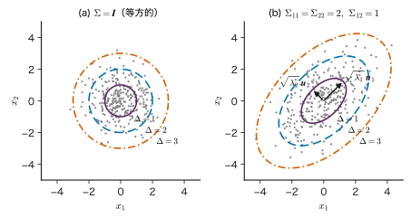
3.6.3 線形変換しても Gauss 分布
定理3.4 多変量 Gauss 分布の線形変換
$\bm{x}\sim\Normal(\bm{\mu},\bm{\Sigma})$，$\bm{x}\in\R^{D}$ とし，$\bm{A}\in\R^{M\times D}$（$M\le D$，階数 $M$），$\bm{b}\in\R^{M}$ を定数とする．このとき $\bm{y}=\bm{A}\bm{x}+\bm{b}\in\R^{M}$ は $\Normal(\bm{A}\bm{\mu}+\bm{b},\ \bm{A}\bm{\Sigma}\bm{A}^{\tp})$ に従う．
平均と共分散の式は第2章の演習2.3 (3) と同じ計算で出る．Gauss 分布であることは，多変数の特性関数 $\Ex[e^{i\bm{k}^{\tp}\bm{x}}]=\exp\bigl(i\bm{k}^{\tp}\bm{\mu}-\tfrac12\bm{k}^{\tp}\bm{\Sigma}\bm{k}\bigr)$ に $\bm{k}\to\bm{A}^{\tp}\bm{k}$ を入れると同じ形になることから分かる．特に $\bm{A}$ を「成分の一部を取り出す行列」にとると，多変量 Gauss 分布の一部の成分の分布（周辺分布）は，平均ベクトルと共分散行列の該当部分を取り出した Gauss 分布であることが分かる．第8章では重みの分布から予測値の分布を，この定理で求める．
3.6.4 2 次元で導く周辺分布と条件付き分布
2 つの量 $x_a$，$x_b$（どちらもスカラー）が 2 次元 Gauss 分布に従うとする．平均 $\mu_a,\mu_b$，標準偏差 $\sigma_a,\sigma_b\gt0$，相関係数 $\rho$（$\abs{\rho}\lt1$）を使うと，共分散行列とその逆行列，行列式は
$$ \bm{\Sigma}=\begin{pmatrix}\sigma_a^{2}&\rho\sigma_a\sigma_b\\ \rho\sigma_a\sigma_b&\sigma_b^{2}\end{pmatrix}, $$ $$ \bm{\Sigma}^{-1}=\frac{1}{\abs{\bm{\Sigma}}}\begin{pmatrix}\sigma_b^{2}&-\rho\sigma_a\sigma_b\\ -\rho\sigma_a\sigma_b&\sigma_a^{2}\end{pmatrix}, $$ $$ \abs{\bm{\Sigma}}=\sigma_a^{2}\sigma_b^{2}(1-\rho^{2}) $$である（2×2 の逆行列の公式）．「$x_b$ の値を知ったとき，$x_a$ についての予想はどう変わるか」を表すのが条件付き分布 $p(x_a\mid x_b)$ であり，それを求めるのがこの項の目標である．
導出：平方完成による分解
標準化した変数 $u=(x_a-\mu_a)/\sigma_a$，$v=(x_b-\mu_b)/\sigma_b$ を使う．上の $\bm{\Sigma}^{-1}$ を代入すると，指数の中の 2 次形式は
$$ \Delta^{2}=\frac{1}{1-\rho^{2}}\left(u^{2}-2\rho uv+v^{2}\right). $$括弧の中を $u$ について平方完成する．$u^{2}-2\rho uv=(u-\rho v)^{2}-\rho^{2}v^{2}$ なので
$$ u^{2}-2\rho uv+v^{2}=(u-\rho v)^{2}+(1-\rho^{2})v^{2}, $$ $$ \Delta^{2}=\frac{(u-\rho v)^{2}}{1-\rho^{2}}+v^{2}. $$正規化定数 $\dfrac{1}{2\pi\abs{\bm{\Sigma}}^{1/2}}=\dfrac{1}{2\pi\sigma_a\sigma_b\sqrt{1-\rho^{2}}}$ も 2 つに分けると，同時密度は 2 つの因子の積になる．
$$ \begin{aligned} p(x_a,x_b)&= \underbrace{\frac{1}{\sqrt{2\pi}\,\sigma_a\sqrt{1-\rho^{2}}}e^{-\frac{(u-\rho v)^{2}}{2(1-\rho^{2})}}}_{(\mathrm{A})}\\ &\quad\times \underbrace{\frac{1}{\sqrt{2\pi}\,\sigma_b}e^{-v^{2}/2}}_{(\mathrm{B})} . \end{aligned} $$(B) は $x_b$ だけの関数で，$v=(x_b-\mu_b)/\sigma_b$ を戻すと $\Normal(x_b\mid\mu_b,\sigma_b^{2})$ そのものである．
(A) を $x_a$ の関数として見る．$u-\rho v=\dfrac{x_a-\mu_a}{\sigma_a}-\rho v=\dfrac{x_a-(\mu_a+\rho\sigma_a v)}{\sigma_a}$ なので
$$ \frac{(u-\rho v)^{2}}{2(1-\rho^{2})}=\frac{\bigl(x_a-(\mu_a+\rho\sigma_a v)\bigr)^{2}}{2\sigma_a^{2}(1-\rho^{2})}. $$よって (A) は，平均 $\mu_a+\rho\sigma_a v$，分散 $\sigma_a^{2}(1-\rho^{2})$ の Gauss 分布の密度であり，$x_a$ について積分すると 1 になる．
周辺化：$p(x_b)=\int p(x_a,x_b)\,\dd x_a$ $=(\mathrm{B})\times\int(\mathrm{A})\,\dd x_a=(\mathrm{B})$．つまり $p(x_b)=\Normal(x_b\mid\mu_b,\sigma_b^{2})$．
条件付け：乗法定理 $p(x_a,x_b)=p(x_a\mid x_b)\,p(x_b)$（第2章 2.2 節）と見比べると，(A) が $p(x_a\mid x_b)$ である．$v$ を戻して
$$ \begin{aligned} p(x_a\mid x_b)=\Normal\Bigl(x_a\,\Big|\,&\mu_a+\rho\frac{\sigma_a}{\sigma_b}(x_b-\mu_b),\\ &\sigma_a^{2}(1-\rho^{2})\Bigr). \end{aligned} $$$a$ と $b$ の役割を入れ替えれば，$p(x_a)=\Normal(x_a\mid\mu_a,\sigma_a^{2})$ と $p(x_b\mid x_a)$ も同じように得られる．
（導出終わり）
共分散行列の成分 $\Sigma_{aa}=\sigma_a^{2}$，$\Sigma_{ab}=\Sigma_{ba}=\rho\sigma_a\sigma_b$，$\Sigma_{bb}=\sigma_b^{2}$ で書き直すと，$\rho\sigma_a/\sigma_b=\Sigma_{ab}\Sigma_{bb}^{-1}$，$\sigma_a^{2}(1-\rho^{2})=\Sigma_{aa}-\Sigma_{ab}\Sigma_{bb}^{-1}\Sigma_{ba}$ なので，結果は
\begin{equation} \begin{aligned} &p(x_a\mid x_b)=\Normal(x_a\mid\mu_{a\mid b},\sigma_{a\mid b}^{2}),\\ &\mu_{a\mid b}=\mu_a+\Sigma_{ab}\Sigma_{bb}^{-1}(x_b-\mu_b),\\ &\sigma_{a\mid b}^{2}=\Sigma_{aa}-\Sigma_{ab}\Sigma_{bb}^{-1}\Sigma_{ba} \end{aligned} \label{eq:3-cond-2d} \end{equation}と書ける．この形は，$x_a$，$x_b$ がベクトルの場合にもそのまま成り立つ．
3.6.5 一般の公式
$\bm{x}\in\R^{D}$ を前半 $\bm{x}_a\in\R^{D_a}$ と後半 $\bm{x}_b\in\R^{D_b}$（$D_a+D_b=D$）に分け，平均ベクトルと共分散行列も同じように区切る．
$$ \bm{x}=\begin{pmatrix}\bm{x}_a\\ \bm{x}_b\end{pmatrix},\qquad \bm{\mu}=\begin{pmatrix}\bm{\mu}_a\\ \bm{\mu}_b\end{pmatrix}, $$ $$ \bm{\Sigma}=\begin{pmatrix}\bm{\Sigma}_{aa}&\bm{\Sigma}_{ab}\\ \bm{\Sigma}_{ba}&\bm{\Sigma}_{bb}\end{pmatrix}. $$ここで $\bm{\Sigma}_{aa}\in\R^{D_a\times D_a}$，$\bm{\Sigma}_{ab}\in\R^{D_a\times D_b}$，$\bm{\Sigma}_{ba}=\bm{\Sigma}_{ab}^{\tp}\in\R^{D_b\times D_a}$，$\bm{\Sigma}_{bb}\in\R^{D_b\times D_b}$ である．
定理3.5 多変量 Gauss 分布の周辺分布と条件付き分布
$\bm{x}\sim\Normal(\bm{\mu},\bm{\Sigma})$ を上のように分けると，次が成り立つ．
(1) 周辺分布：$p(\bm{x}_a)=\Normal(\bm{x}_a\mid\bm{\mu}_a,\bm{\Sigma}_{aa})$．
(2) 条件付き分布：$p(\bm{x}_a\mid\bm{x}_b)=\Normal(\bm{x}_a\mid\bm{\mu}_{a\mid b},\bm{\Sigma}_{a\mid b})$．平均 $\bm{\mu}_{a\mid b}\in\R^{D_a}$ と共分散 $\bm{\Sigma}_{a\mid b}\in\R^{D_a\times D_a}$ は次の式 \eqref{eq:3-cond-mean}，\eqref{eq:3-cond-cov} で与えられる．
証明はブロック行列の逆行列（Schur 補行列）を使って 2 次元の場合と同じ平方完成を行うもので，付録A の A.6 に置いた．(1) は定理3.4 からも出る．
この定理から読み取れることを 3 つ挙げる．
- 条件付き平均は $\bm{x}_b$ の 1 次式である．$\bm{x}_b$ が平均から $\bm{x}_b-\bm{\mu}_b$ だけずれていれば，$\bm{x}_a$ の予想はその「相関の分」$\bm{\Sigma}_{ab}\bm{\Sigma}_{bb}^{-1}$ を掛けた量だけずれる．2 次元では傾き $\rho\sigma_a/\sigma_b$ の直線で，最小二乗法の回帰直線と同じものになる．
- 条件付き共分散は $\bm{x}_b$ の値によらず，$\bm{\Sigma}_{aa}$ から半正定値の行列 $\bm{\Sigma}_{ab}\bm{\Sigma}_{bb}^{-1}\bm{\Sigma}_{ba}$ を引いたものである．つまり，観測すれば不確かさは減りこそすれ増えない（どちらも同時分布が Gauss 分布であることの帰結で，実データでばらつきが値によって変わるなら成り立たない）．2 次元では分散が $(1-\rho^{2})$ 倍になる．$\rho=0$ なら減らない（独立なので $x_b$ は $x_a$ について何も教えない）．
- 第12章のガウス過程回帰は，観測した点の関数値を $\bm{x}_b$，予測したい点の関数値を $\bm{x}_a$ として式 \eqref{eq:3-cond-mean}，\eqref{eq:3-cond-cov} を当てはめる．この定理は第12章（ガウス過程）の心臓部である．
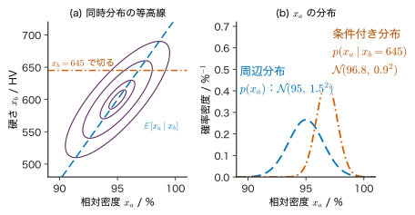
例題3.6 硬さから相対密度を推し量る
ある焼結体の相対密度 $x_a$（%）と Vickers 硬さ $x_b$（HV）が，平均 $\mu_a=95$，$\mu_b=600$，標準偏差 $\sigma_a=1.5$，$\sigma_b=30$，相関係数 $\rho=0.8$ の 2 次元 Gauss 分布に従うとする（教育用の設定）．(1) 硬さだけを測って $x_b=645$ を得た．相対密度の条件付き分布を求めよ．(2) 点 $(x_a,x_b)=(97,645)$ の Mahalanobis 距離の 2 乗 $\Delta^{2}$ を求め，相関を無視した場合（$\rho=0$ とみなす）と比べよ．
解答 (1) 3.6.4 項の結果に代入する．条件付き平均は
$$ \begin{aligned} &\mu_a+\rho\frac{\sigma_a}{\sigma_b}(x_b-\mu_b)\\ &=95+0.8\times\frac{1.5}{30}\times(645-600)\\ &=95+0.04\times45=96.8\ \%. \end{aligned} $$条件付き分散は $\sigma_a^{2}(1-\rho^{2})=2.25\times(1-0.64)=0.81\ \%^{2}$，標準偏差 0.9 %．硬さを知ったことで，予想の中心が 95 % から 96.8 % に動き，幅が 1.5 % から 0.9 % に狭まった．
(2) $u=(97-95)/1.5=1.333$，$v=(645-600)/30=1.5$．3.6.4 項の $\Delta^{2}=(u^{2}-2\rho uv+v^{2})/(1-\rho^{2})$ に代入して
$$ \begin{aligned} \Delta^{2}&=\frac{1.778-2\times0.8\times1.333\times1.5+2.25}{0.36}\\ &=\frac{1.778-3.200+2.25}{0.36}=\frac{0.828}{0.36}\approx2.30 . \end{aligned} $$相関を無視すると $u^{2}+v^{2}=1.778+2.25\approx4.03$ となる．この点は「密度も硬さも平均より高い」という，正の相関のもとでは起こりやすい組み合わせなので，相関を考えると $\Delta$ が小さくなる．相関を無視すると，ふつうの試料を外れ値と誤って判定しやすくなる．
3.7 Lorentz 型の線形と Cauchy 分布 — 平均の存在しない分布詳しいルート
3.7.1 スペクトルの線形から確率分布へ
原子や分子の励起状態は，有限の寿命 $\tau$ で崩壊する．振動が $e^{-t/(2\tau)}$ のように減衰しながら続く信号を Fourier 変換すると，スペクトルの強度は中心の振動数 $\omega_0$ の周りで $1/[(\omega-\omega_0)^{2}+\gamma^{2}]$ の形になる（$\gamma$ は寿命の逆数に比例する）．これを Lorentz（ローレンツ）型の線形という（両側指数関数の Fourier 変換が Lorentz 型になる計算は大学数学 第30章 30.5）．面積が 1 になるように規格化すると，確率密度とみなせる．
定義3.9 Cauchy 分布（Lorentz 型）
$x\in\R$，パラメーター $x_0\in\R$（中心）と $\gamma\gt0$（半値半幅）について
\begin{equation} \begin{aligned}&p(x\mid x_0,\gamma)\\&=\frac{1}{\pi}\,\frac{\gamma}{(x-x_0)^{2}+\gamma^{2}}\end{aligned} \label{eq:3-cauchy} \end{equation}を Cauchy（コーシー）分布という．物理では同じ関数を Lorentz 型と呼ぶ．
正規化を確かめる．$y=x-x_0$ と置き，$\dfrac{\dd}{\dd y}\arctan\dfrac{y}{\gamma}=\dfrac{\gamma}{y^{2}+\gamma^{2}}$ を使うと
$$ \begin{aligned} \int_{-\infty}^{\infty}\frac{1}{\pi}\frac{\gamma}{y^{2}+\gamma^{2}}\,\dd y&=\frac{1}{\pi}\Bigl[\arctan\frac{y}{\gamma}\Bigr]_{-\infty}^{\infty}\\ &=\frac{1}{\pi}\left(\frac{\pi}{2}+\frac{\pi}{2}\right)=1 . \end{aligned} $$同じ計算で累積分布関数は $F(x)=\dfrac12+\dfrac1\pi\arctan\dfrac{x-x_0}{\gamma}$ である．$F(x_0)=1/2$ なので中央値は $x_0$，$F(x_0\pm\gamma)=1/2\pm1/4$ なので四分位点は $x_0\pm\gamma$（四分位範囲 $2\gamma$）．密度の最大値は $1/(\pi\gamma)$ で，その半分になるのは $(x-x_0)^{2}+\gamma^{2}=2\gamma^{2}$，すなわち $x=x_0\pm\gamma$ のときなので，半値全幅は $2\gamma$ である．中央値・最頻値・四分位点・半値全幅は，どれも問題なく定まる．
3.7.2 平均が存在しないことを積分で示す
定義3.1 の条件 \eqref{eq:3-mean-exists} を調べる．$y=x-x_0$ として，$\abs{y}\le R$ の範囲で切った積分を計算する．被積分関数は偶関数なので 2 倍して $[0,R]$ で積分し，$\dfrac{\dd}{\dd y}\ln(y^{2}+\gamma^{2})=\dfrac{2y}{y^{2}+\gamma^{2}}$ を使う．
\begin{equation} \begin{aligned}&\int_{-R}^{R}\abs{y}\,\frac{1}{\pi}\frac{\gamma}{y^{2}+\gamma^{2}}\,\dd y\\&=\frac{2\gamma}{\pi}\int_{0}^{R}\frac{y}{y^{2}+\gamma^{2}}\,\dd y\\&=\frac{\gamma}{\pi}\ln\!\left(1+\frac{R^{2}}{\gamma^{2}}\right)\end{aligned} \label{eq:3-cauchy-abs} \end{equation}$\gamma=1$ で $R=10,\ 100,\ 1000,\ 10^{6}$ とすると 1.47，2.93，4.40，8.80 と，$R$ を 10 倍するたびに約 1.47 ずつ増え続け，$R\to\infty$ で発散する．したがって Cauchy 分布の平均は存在しない．裾で $p(x)\sim\gamma/(\pi x^{2})$ なので $\abs{x}p(x)\sim1/x$ となり，その積分が対数的に発散するのが原因である．
「左右対称なのだから平均は $x_0$ ではないか」と思うかもしれない．確かに，積分範囲を $x_0$ の左右に同じ幅 $R$ で取って $R\to\infty$ とすれば，奇関数の打ち消しで $\int_{-R}^{R}y\,p\,\dd y=0$ となり，$x_0$ が得られる（これを主値という）．しかし範囲を $[-R,\,2R]$ のように非対称に取ると
$$ \begin{aligned} &\int_{-R}^{2R}\frac{y}{\pi}\frac{\gamma}{y^{2}+\gamma^{2}}\,\dd y\\ &=\frac{\gamma}{2\pi}\ln\frac{4R^{2}+\gamma^{2}}{R^{2}+\gamma^{2}}\\ &\longrightarrow\ \frac{\gamma}{2\pi}\ln4=\frac{\gamma\ln2}{\pi}\approx0.221\,\gamma \end{aligned} $$（矢印は $R\to\infty$ の極限） となり，答えが範囲の取り方で変わる．期待値が「取り方によらず 1 つに決まる」ことを保証するのが絶対収束の条件であり，Cauchy 分布はそれを満たさない．分散も同様で，$\int_{-R}^{R}y^{2}p\,\dd y$ $=\dfrac{2\gamma}{\pi}\bigl(R-\gamma\arctan(R/\gamma)\bigr)$ は $R$ に比例して発散する．
3.7.3 標本平均が落ち着かない
第2章 2.8 節の大数の法則と中心極限定理は，分散が有限であることを仮定していた．Cauchy 分布ではこの仮定が崩れる．何が起こるかを特性関数で調べる．
導出：Cauchy 分布の標本平均の分布
まず $x_0=0$ の Cauchy 分布の特性関数が $e^{-\gamma\abs{k}}$ であることを示す．逆向きに，$e^{-\gamma\abs{k}}$ を逆 Fourier 変換すると
$$ \begin{aligned} &\frac{1}{2\pi}\int_{-\infty}^{\infty}e^{-\gamma\abs{k}}e^{-iky}\,\dd k\\ &=\frac{1}{2\pi}\Bigl[\int_{0}^{\infty}e^{-(\gamma+iy)k}\,\dd k\\ &\qquad\ +\int_{0}^{\infty}e^{-(\gamma-iy)k}\,\dd k\Bigr]\\ &=\frac{1}{2\pi}\left(\frac{1}{\gamma+iy}+\frac{1}{\gamma-iy}\right)\\ &=\frac{1}{2\pi}\cdot\frac{2\gamma}{\gamma^{2}+y^{2}}=\frac{1}{\pi}\frac{\gamma}{y^{2}+\gamma^{2}} \end{aligned} $$となり，Cauchy 分布の密度に戻る（第 2 の積分は $k\to-k$ と置き換えた）．Fourier 変換は 1 対 1 なので，$\Ex[e^{iky}]=e^{-\gamma\abs{k}}$ である．中心を $x_0$ にずらすと $e^{ikx_0}$ が掛かり，
\begin{equation} \begin{aligned}\varphi(k)&=\Ex[e^{ikx}]\\&=\exp\bigl(ix_0k-\gamma\abs{k}\bigr) .\end{aligned} \label{eq:3-cauchy-cf} \end{equation}次に，$x_1,\dots,x_n$ が独立に同じ Cauchy 分布に従うとき，標本平均 $\bar{x}_n=\frac1n\sum_jx_j$ の特性関数は，独立性から積に分かれ，
$$ \begin{aligned} \Ex\!\left[e^{ik\bar{x}_n}\right]&=\prod_{j=1}^{n}\Ex\!\left[e^{i(k/n)x_j}\right]=\left[e^{ix_0k/n-\gamma\abs{k}/n}\right]^{n}\\ &=\exp\bigl(ix_0k-\gamma\abs{k}\bigr). \end{aligned} $$これは式 \eqref{eq:3-cauchy-cf} と同じである．よって $\bar{x}_n$ は，$n$ がいくつでも1 個の観測と同じ Cauchy 分布 $p(\bar{x}_n\mid x_0,\gamma)$ に従う．
（導出終わり）
Gauss 分布では，同じ計算で $\bar{x}_n$ の特性関数は $\exp(i\mu k-\sigma^{2}k^{2}/(2n))$ となり，分散が $1/n$ に縮んだ．違いは指数の $k$ の次数にある．$k^{2}$ なら $n$ 個の積で $(k/n)^{2}\times n=k^{2}/n$ と縮むが，$\abs{k}$ では $(\abs{k}/n)\times n=\abs{k}$ と元に戻ってしまう．
結果として，1 万個の標本の平均でも，中心から $\gamma$ 以上外れる確率は 1 個の観測と同じ $1-F(x_0+\gamma)+F(x_0-\gamma)=1/2$ のままである．これに対して標本の中央値は，大きな外れ値に引きずられず，$n$ が大きいとき標準偏差およそ $\pi\gamma/(2\sqrt{n})$ で中心 $x_0$ に近づく（中央値の分布の近似式 $1/(2p(x_0)\sqrt{n})$ に $p(x_0)=1/(\pi\gamma)$ を入れた値）．
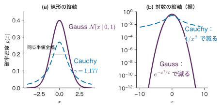
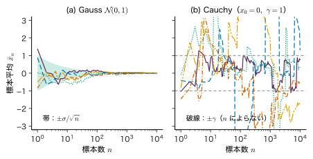
例題3.7 Cauchy 分布の裾と Gauss 分布の裾
(1) Cauchy 分布で $\abs{x-x_0}\gt3\gamma$ となる確率を求めよ．(2) 標準 Gauss 分布と，それと半値全幅が等しい Cauchy 分布について，$-1\le x\le1$ の確率と $\abs{x}\gt3$ の確率を比べよ．$\arctan(1/1.1774)=0.7041$，$\arctan(3/1.1774)=1.1968$ を使ってよい．
解答 (1) $F$ の式から $P(\abs{x-x_0}\le3\gamma)$ $=F(x_0+3\gamma)-F(x_0-3\gamma)$ $=\dfrac{2}{\pi}\arctan3$．したがって
$$ \begin{aligned} P(\abs{x-x_0}\gt3\gamma)&=1-\frac{2}{\pi}\arctan3\\ &=1-\frac{2\times1.2490}{\pi}\approx0.205 . \end{aligned} $$Gauss 分布で「$3\sigma$ を超える」確率 0.0027 と比べると，ずっと大きい．
(2) 半値全幅をそろえるには $2\gamma=2\sqrt{2\ln2}\,\sigma$，$\sigma=1$ なので $\gamma=1.1774$．Cauchy 分布では
$$ \begin{aligned} P(\abs{x}\le1)&=\frac{2}{\pi}\arctan\frac{1}{1.1774}\\ &=\frac{2\times0.7041}{\pi}=0.448,\\ P(\abs{x}\gt3)&=1-\frac{2\times1.1968}{\pi}=0.238 . \end{aligned} $$Gauss 分布では 0.683 と 0.0027．ピークの幅が同じでも，Cauchy 分布は中央に確率が少なく，$\abs{x}\gt3$ の確率は約 88 倍である．
シミュレーター3.2 標本平均の振る舞い — Gauss と Cauchy
Gauss 分布と Cauchy 分布（または t 分布）から標本を 1 個ずつ足していき，標本平均（または中央値）の推移を左右に並べて描く装置である．
操作と観察
- 開いた直後の既定（右の図の分布「Cauchy 分布」，尺度 1.0，描く量「標本平均 x̄ₙ」，標本数 n の上限 10⁴，系列の数 5，seed 20261112）のまま，読み出しの $n=10^{4}$ の値を見る（式 \eqref{eq:3-cauchy-cf} から導いた結論の確認） → Gauss の $\bar{x}_n$ は −0.0035，0.0006，−0.0087，0.0075，0.0137 で $\sigma/\sqrt{n}=0.01$ の程度に収まる．Cauchy は 0.769，−1.83，0.118，1.35，−0.910 で，5 系列中 2 系列が $\abs{\bar{x}_n}\gt\gamma$ になる．3.7.3 項の結論（$\bar{x}_n$ は $n$ によらず 1 個の観測と同じ分布）と比べる．
- 「描く量」を「中央値」にする → Cauchy でも中央値は 0.0057，0.0022，0.0052，0.0005，0.0036 と中心 0 に集まり，帯 $\pm\pi\gamma/(2\sqrt{n})=\pm0.0157$ の程度に入る．
- 「描く量」を「標本平均 x̄ₙ」に戻し，「標本数 n の上限」を 10⁵，「系列の数（独立にやり直す回数）」を 20 にする → Gauss は 20 系列の標準偏差が 0.0024（理論 $1/\sqrt{10^{5}}=0.0032$）まで縮むが，Cauchy は 20 系列中 12 系列が $\abs{\bar{x}_n}\gt1$ のままである．
- 乱数の seed の「同じ seed でやり直す」を押す → 曲線がまったく同じに描き直されることを確かめる．跳びは計算の誤りではなく，同じ乱数の列から必ず再現される分布の性質である．
操作後の問い
- Cauchy の曲線が，ときどき階段のように大きく跳ぶのはなぜか．
答えの例
Cauchy 分布は裾が $1/x^{2}$ でしか減らないので，まれに中心から何千も離れた値が出る（既定の 5 系列では標本の最大 $\abs{x}$ が約 22070）．$n$ 個目にそのような値 $x_n$ が出ると，標本平均は $x_n/n$ だけ動く．標本数が多くても，それを上回る大きさの値が出てしまうので平均が動く．Gauss 分布では標本の最大 $\abs{x}$ が 4〜5 程度にとどまり，$x_n/n$ は $n$ とともに小さくなる．
- 手順 1 と 3 で，$\abs{\bar{x}_n}\gt\gamma$ の系列の割合は 2/5 と 12/20 だった．理論値はいくつか．系列の数を増やすとどうなると予想されるか．
答えの例
$\bar{x}_n$ が Cauchy 分布 $(x_0,\gamma)$ に従うので，$P(\abs{\bar{x}_n-x_0}\gt\gamma)$ $=1-\frac{2}{\pi}\arctan1=1/2$ である．系列の数を増やすと割合は 1/2 に近づく（系列どうしは独立なので，割合については大数の法則が成り立つ）．
装置は位置を 0 に固定し，3 つの分布の尺度（Gauss の $\sigma$，Cauchy の $\gamma$，t の $s$）を 1 本のスライダーで共通に変える．図3.7 のように半値全幅をそろえてはいない点に注意する．
3.8 Gamma 分布と Beta 分布 — 正の量と割合の分布詳しいルート
3.8.1 ガンマ関数とベータ関数
数学の道具：ガンマ関数とベータ関数
$a\gt0$，$b\gt0$ について
$$ \Gamma(a)=\int_{0}^{\infty}t^{a-1}e^{-t}\,\dd t, $$ $$ B(a,b)=\int_{0}^{1}v^{a-1}(1-v)^{b-1}\,\dd v . $$部分積分で $\Gamma(a+1)=a\,\Gamma(a)$，$\Gamma(1)=1$ から正の整数 $n$ について $\Gamma(n)=(n-1)!$．また $\Gamma(1/2)=\sqrt{\pi}$（Gauss 積分に帰着する）．詳しくは大学数学 第32章 32.2，32.4，付録A の A.10．
ベータ関数はガンマ関数で書ける．この関係は Beta 分布の平均・分散を求めるのに使うだけでなく，Gamma 分布と Beta 分布のつながりも教えてくれるので，ここで導いておく．
導出：$B(a,b)=\Gamma(a)\Gamma(b)/\Gamma(a+b)$
2 つのガンマ関数の積を 2 重積分として書く．
$$ \Gamma(a)\Gamma(b)=\int_{0}^{\infty}\!\!\int_{0}^{\infty}t^{a-1}s^{b-1}e^{-(t+s)}\,\dd t\,\dd s . $$変数を $u=t+s\in(0,\infty)$，$v=t/(t+s)\in(0,1)$ に変える．逆に解くと $t=uv$，$s=u(1-v)$．Jacobi 行列式は
$$ \begin{aligned} &\det\begin{pmatrix}\partial t/\partial u&\partial t/\partial v\\ \partial s/\partial u&\partial s/\partial v\end{pmatrix}\\ &=\det\begin{pmatrix}v&u\\ 1-v&-u\end{pmatrix}\\ &=-uv-u(1-v)=-u \end{aligned} $$で，絶対値は $u$（大学数学 第7章 7.3）．代入すると $t^{a-1}s^{b-1}=u^{a+b-2}v^{a-1}(1-v)^{b-1}$ なので
$$ \begin{aligned} \Gamma(a)\Gamma(b)&=\int_{0}^{\infty}u^{a+b-1}e^{-u}\,\dd u\\ &\quad\times\int_{0}^{1}v^{a-1}(1-v)^{b-1}\,\dd v\\ &=\Gamma(a+b)\,B(a,b). \end{aligned} $$（導出終わり）
この計算は確率の言葉でも読める．$t$ と $s$ が独立に 3.8.2 項の $\mathrm{Gam}(a,1)$ と $\mathrm{Gam}(b,1)$ に従うとき，被積分関数は同時密度（の定数倍）であり，それが $u$ だけの因子と $v$ だけの因子に分かれた．つまり，割合 $v=t/(t+s)$ は和 $u$ と独立に，次の 3.8.3 項の Beta 分布 $\mathrm{Beta}(a,b)$ に従う．2 種類の量の「取り分の割合」が Beta 分布になる，という見方は 3.10 節の Dirichlet 分布につながる．
3.8.2 Gamma 分布
定義3.10 Gamma 分布
$x\in(0,\infty)$，パラメーター $a\gt0$（形）と $b\gt0$（率）について
\begin{equation} \begin{aligned}&\mathrm{Gam}(x\mid a,b)\\&=\frac{b^{a}}{\Gamma(a)}\,x^{a-1}e^{-bx}\end{aligned} \label{eq:3-gamma} \end{equation}を Gamma 分布という．$1/b$ は尺度（$x$ と同じ単位）である．
記号：Gamma 分布のパラメーター
形と率を $\alpha,\beta$ と書く本も多い．本書ではシミュレーター3.1 の表示に合わせて $a,b$ と書く（第4章の演習4.3 も同じ）．率の代わりに尺度 $1/b$ を使う流儀もあるので，文献では平均の式で確かめるとよい．
正規化：$t=bx$ と置くと $\dd x=\dd t/b$ で，$\int_0^\infty x^{a-1}e^{-bx}\,\dd x$ $=b^{-a}\int_0^\infty t^{a-1}e^{-t}\,\dd t=\Gamma(a)/b^{a}$．先頭の定数がこれを打ち消す．同じ置き換えで，任意の $r\gt-a$ について
$$ \begin{aligned} \Ex[x^{r}]&=\frac{b^{a}}{\Gamma(a)}\int_0^\infty x^{a+r-1}e^{-bx}\,\dd x\\ &=\frac{b^{a}}{\Gamma(a)}\cdot\frac{\Gamma(a+r)}{b^{a+r}}=\frac{\Gamma(a+r)}{\Gamma(a)\,b^{r}} . \end{aligned} $$$r=1$ で $\Ex[x]=\Gamma(a+1)/(\Gamma(a)b)=a/b$，$r=2$ で $\Ex[x^{2}]=a(a+1)/b^{2}$，したがって
最頻値は，$\ln p=(a-1)\ln x-bx+\text{定数}$ を微分して 0 とおき，$x=(a-1)/b$（$a\ge1$ のとき）．$a\lt1$ では $x\to0$ で密度が発散する（面積は有限）．形 $a$ を大きくすると，相対的な幅 $\sqrt{\Var}/\Ex=1/\sqrt{a}$ が小さくなり，左右対称に近づく（図3.9(a)）．
特別な場合として，$a=1$ は例題3.1 の指数分布 $b\,e^{-bx}$ である．$a$ が正の整数なら，率 $b$ の指数分布に従う独立な待ち時間 $a$ 個の和，つまり「$a$ 回目の事象が起こるまでの時間」の分布になる（指数分布の特性関数 $b/(b-ik)$ の $a$ 乗が Gamma 分布の特性関数 $(b/(b-ik))^{a}$ に一致することから示せる）．自由度 $\nu$ の $\chi^{2}$ 分布は $\mathrm{Gam}(\nu/2,\,1/2)$ である．
3.8.3 Beta 分布
Beta 分布は第4章 4.4 節で成功率の事前分布として自足的に説明しているが，ここで分布としての性質をまとめて導く．記号は第4章と同じである．
定義3.11 Beta 分布
$\mu\in[0,1]$，パラメーター $a\gt0$，$b\gt0$ について
\begin{equation} \begin{aligned}&\mathrm{Beta}(\mu\mid a,b)\\&=\frac{1}{B(a,b)}\,\mu^{a-1}(1-\mu)^{b-1}\\&=\frac{\Gamma(a+b)}{\Gamma(a)\Gamma(b)}\\&\quad\times\mu^{a-1}(1-\mu)^{b-1}\end{aligned} \label{eq:3-beta} \end{equation}を Beta 分布という．正規化はベータ関数の定義そのものである．
平均と分散は，Gamma 分布と同じく「積分がまたベータ関数になる」ことを使う．$\Ex[\mu^{r}]=B(a+r,b)/B(a,b)$ をガンマ関数で書くと
$$ \begin{aligned} \Ex[\mu]&=\frac{\Gamma(a+1)\Gamma(a+b)}{\Gamma(a)\Gamma(a+b+1)}=\frac{a}{a+b},\\ \Ex[\mu^{2}]&=\frac{\Gamma(a+2)\Gamma(a+b)}{\Gamma(a)\Gamma(a+b+2)}=\frac{a(a+1)}{(a+b)(a+b+1)} . \end{aligned} $$$\Var[\mu]=\Ex[\mu^{2}]-\Ex[\mu]^{2}$ を通分して分子を整理すると（$a(a+1)(a+b)-a^{2}(a+b+1)=ab$）
分散の式で $a+b=n$ と書くと $\Var[\mu]=\Ex[\mu](1-\Ex[\mu])/(n+1)$ であり，$a+b$ が大きいほど分布は細い．最頻値は，対数 $(a-1)\ln\mu+(b-1)\ln(1-\mu)$ の微分を 0 として $\mu=(a-1)/(a+b-2)$（$a\gt1$ かつ $b\gt1$ のとき）．形は $a,b$ と 1 との大小で決まる（図3.9(b)）．
- $a=b=1$：一様分布（密度 1）．
- $a\gt1$，$b\gt1$：内部に山が 1 つ．$a=b$ なら $\mu=1/2$ について対称．
- $a\lt1$（$b\lt1$）：$\mu\to0$（$\mu\to1$）で密度が発散する．$a,b$ がともに 1 未満なら U 字形．
- $a=1$ や $b=1$ のちょうどの場合は端で有限の値をとる．第4章 4.4 節の MAP 推定の場合分けは，この形の違いから来ている．
$\mu^{a-1}(1-\mu)^{b-1}$ の形は，Bernoulli 試行で成功 $a-1$ 回・失敗 $b-1$ 回を観測したときの尤度 $\mu^{m}(1-\mu)^{l}$ と同じ形をしている．このため，Beta 分布を成功率の事前分布に使うと，データを見た後の分布もまた Beta 分布になる．これが第4章 4.4 節の Beta–Bernoulli モデルである．
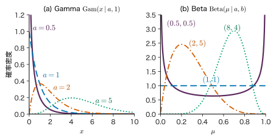
例題3.8 Gamma 分布と Beta 分布の要約
(1) $\mathrm{Gam}(x\mid3,\,0.5)$ の平均・分散・最頻値を求めよ．(2) $\mathrm{Beta}(\mu\mid2,5)$ の正規化定数・平均・分散・最頻値を求めよ．
解答 (1) 平均 $a/b=3/0.5=6$，分散 $a/b^{2}=3/0.25=12$（標準偏差 3.46），最頻値 $(a-1)/b=2/0.5=4$．最頻値 4 < 平均 6 で，右に裾を引く．
(2) $B(2,5)=\dfrac{\Gamma(2)\Gamma(5)}{\Gamma(7)}=\dfrac{1!\,4!}{6!}=\dfrac{24}{720}=\dfrac{1}{30}$ なので，密度は $30\,\mu(1-\mu)^{4}$．平均 $2/7\approx0.286$，分散 $\dfrac{2\times5}{7^{2}\times8}=\dfrac{10}{392}\approx0.0255$（標準偏差 0.160），最頻値 $\dfrac{2-1}{2+5-2}=0.2$．シミュレーター3.1 で分布を「Beta 分布」にすると，既定の $a=2$，$b=5$ でこれらの値が読み出しに出る（画面では変数 $\mu$ を $x$ と書く）．
3.9 Student の t 分布 — 裾の重さを調節する詳しいルート
3.9.1 Gauss 分布の分散を混ぜる
測定値の大部分は Gauss 分布に従うが，ときどき大きく外れた値が混じることがある．これを「測定ごとにばらつきの大きさが違う」と考えて表す．各測定の精度（分散の逆数）を表す正の変数 $\eta$ を導入し，
$$ x\mid\eta\ \sim\ \Normal\!\left(x\,\middle|\,\mu,\ \frac{s^{2}}{\eta}\right), $$ $$ \eta\ \sim\ \mathrm{Gam}\!\left(\eta\,\middle|\,\frac{\nu}{2},\frac{\nu}{2}\right) $$とする．$s\gt0$ は尺度，$\nu\gt0$ は自由度と呼ばれる形のパラメーターである．$\eta$ の平均は $(\nu/2)/(\nu/2)=1$ なので，平均的には分散 $s^{2}$ の Gauss 分布だが，$\eta$ が小さい測定（めったにないが，ときどき起こる）では分散が大きくなり外れ値が出る．$\nu$ が小さいほど $\eta$ のばらつき（分散 $2/\nu$）が大きい．$\eta$ を積分で消すと $x$ の分布が得られる．
導出：Gauss 分布と Gamma 分布の混合
$\Delta^{2}=(x-\mu)^{2}/s^{2}$ と書く．周辺化（第2章 2.6 節）により
$$ \begin{aligned} p(x)=\int_0^\infty&\sqrt{\frac{\eta}{2\pi s^{2}}}\,e^{-\eta\Delta^{2}/2}\\ &\times\frac{(\nu/2)^{\nu/2}}{\Gamma(\nu/2)}\,\eta^{\nu/2-1}e^{-\nu\eta/2}\,\dd\eta . \end{aligned} $$$\eta$ に依らない定数をくくり出し，$\eta$ のべきと指数をまとめる．$\eta^{1/2}\cdot\eta^{\nu/2-1}=\eta^{(\nu+1)/2-1}$，$e^{-\eta\Delta^{2}/2}e^{-\nu\eta/2}=e^{-\eta(\nu+\Delta^{2})/2}$ なので
$$ \begin{aligned} p(x)=&\frac{(\nu/2)^{\nu/2}}{\Gamma(\nu/2)\sqrt{2\pi}\,s}\\ &\times\int_0^\infty\eta^{(\nu+1)/2-1}e^{-\eta(\nu+\Delta^{2})/2}\,\dd\eta . \end{aligned} $$残った積分は Gamma 分布の正規化（3.8.2 項）で $a=(\nu+1)/2$，$b=(\nu+\Delta^{2})/2$ としたもので，$\Gamma\bigl(\tfrac{\nu+1}{2}\bigr)\big/\bigl(\tfrac{\nu+\Delta^{2}}{2}\bigr)^{(\nu+1)/2}$ に等しい．$\tfrac{\nu+\Delta^{2}}{2}=\tfrac{\nu}{2}\bigl(1+\tfrac{\Delta^{2}}{\nu}\bigr)$ と書くと
$$ \begin{aligned} &\frac{(\nu/2)^{\nu/2}}{\bigl(\frac{\nu}{2}\bigr)^{(\nu+1)/2}\bigl(1+\frac{\Delta^{2}}{\nu}\bigr)^{(\nu+1)/2}}\\ &=\sqrt{\frac{2}{\nu}}\left(1+\frac{\Delta^{2}}{\nu}\right)^{-(\nu+1)/2} . \end{aligned} $$$\sqrt{2/\nu}/\sqrt{2\pi}=1/\sqrt{\nu\pi}$ なので，次の式 \eqref{eq:3-t} を得る．
（導出終わり）
定義3.12 Student の t 分布
$x\in\R$，位置 $\mu\in\R$，尺度 $s\gt0$，自由度 $\nu\gt0$ について，次の式 \eqref{eq:3-t} を Student の t 分布という．
第4章 4.9 節で外れ値に強い尤度として使った式（定数を省いた形）と同じである．シミュレーター3.1 の「Student の t 分布」も位置 $\mu$，尺度 $s$，自由度 $\nu$ で表示している．
3.9.2 Cauchy 分布と Gauss 分布をつなぐ
- $\nu=1$：$\Gamma(1)=1$，$\Gamma(1/2)=\sqrt\pi$ なので定数は $1/(\pi s)$，式は $\dfrac{1}{\pi s}\Bigl[1+\dfrac{(x-\mu)^{2}}{s^{2}}\Bigr]^{-1}=\dfrac{1}{\pi}\dfrac{s}{(x-\mu)^{2}+s^{2}}$．これは $x_0=\mu$，$\gamma=s$ の Cauchy 分布である．
- $\nu\to\infty$：$\bigl(1+u/\nu\bigr)^{-(\nu+1)/2}\to e^{-u/2}$（$u=(x-\mu)^{2}/s^{2}$．指数関数の定義）．正規化定数は $1/(\sqrt{2\pi}s)$ に近づく（ガンマ関数の比の Stirling 近似から）．よって Gauss 分布 $\Normal(\mu,s^{2})$ になる．$\eta$ の分散 $2/\nu$ が 0 になり，精度が 1 に固定されることに対応する．
裾は，$\abs{x}$ が大きいとき $[\,\cdot\,]^{-(\nu+1)/2}\sim\abs{x}^{-(\nu+1)}$ のようにべき乗で減る（図3.10）．定義3.1 の後の目安から，$\Ex[\abs{x}^{k}]$ は $k\lt\nu$ のときだけ有限である．
定理3.6 t 分布の平均と分散の存在条件
$x\sim\mathrm{St}(x\mid\mu,s^{2},\nu)$ について，平均は $\nu\gt1$ のときだけ存在して $\Ex[x]=\mu$．分散は $\nu\gt2$ のときだけ有限で $\Var[x]=s^{2}\dfrac{\nu}{\nu-2}$．$1\lt\nu\le2$ では平均は存在するが分散は発散する．
導出：混合の表現から分散を求める
$\eta$ を与えたときの条件付きの平均と分散は $\Ex[x\mid\eta]=\mu$，$\Var[x\mid\eta]=s^{2}/\eta$．条件付き平均が $\eta$ によらない定数なので，全体の分散は条件付き分散の平均になる（$\Var[x]=\Ex[(x-\mu)^{2}]=\Ex_{\eta}\bigl[\Ex[(x-\mu)^{2}\mid\eta]\bigr]$）．
$$ \Var[x]=s^{2}\,\Ex\!\left[\frac{1}{\eta}\right]. $$$\eta\sim\mathrm{Gam}(a,b)$ について，3.8.2 項の $\Ex[\eta^{r}]=\Gamma(a+r)/(\Gamma(a)b^{r})$ に $r=-1$ を入れると（$a\gt1$ が必要）
$$ \Ex\!\left[\frac1\eta\right]=\frac{\Gamma(a-1)\,b}{\Gamma(a)}=\frac{b}{a-1}. $$$a=b=\nu/2$ を入れて $\Ex[1/\eta]=\dfrac{\nu/2}{\nu/2-1}=\dfrac{\nu}{\nu-2}$（$\nu\gt2$）．$\nu\le2$ では $\int_0\eta^{-1}\eta^{\nu/2-1}\,\dd\eta$ が $\eta\to0$ で発散する．つまり，精度がほぼ 0 の測定（とてつもなく大きな外れ値）が「十分な頻度で」混じるために分散が無限大になる．
（導出終わり）
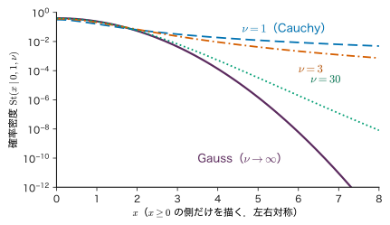
例題3.9 自由度 3 の t 分布
$\mathrm{St}(x\mid0,1,3)$ について，(1) 正規化定数，(2) 分散，(3) $\abs{x}\gt3$ の確率を求めよ．(3) は累積分布関数を使わず，$x=\sqrt3\tan\theta$ の置換で求めよ．
解答 (1) $\Gamma(2)=1$，$\Gamma(3/2)=\tfrac12\sqrt\pi$ なので
$$ \begin{aligned} \frac{\Gamma(2)}{\Gamma(3/2)\sqrt{3\pi}}&=\frac{1}{\frac12\sqrt\pi\cdot\sqrt{3\pi}}\\ &=\frac{2}{\pi\sqrt3}\approx0.3676, \end{aligned} $$ $$ p(x)=\frac{2}{\pi\sqrt3}\left(1+\frac{x^{2}}{3}\right)^{-2}. $$(2) 定理3.6 より $\Var[x]=1\times3/(3-2)=3$．
(3) $x=\sqrt3\tan\theta$ と置くと $\dd x=\sqrt3\sec^{2}\theta\,\dd\theta$，$1+x^{2}/3=\sec^{2}\theta$ なので
$$ \begin{aligned} \int p(x)\,\dd x&=\frac{2}{\pi\sqrt3}\int\cos^{4}\theta\cdot\sqrt3\sec^{2}\theta\,\dd\theta\\ &=\frac{2}{\pi}\int\cos^{2}\theta\,\dd\theta\\ &=\frac{1}{\pi}\left(\theta+\tfrac12\sin2\theta\right)+C . \end{aligned} $$$x$ が $0$ から $3$ まで動くと $\theta$ は $0$ から $\arctan\sqrt3=\pi/3$ まで動くので，$P(0\le x\le3)=\dfrac1\pi\left(\dfrac\pi3+\dfrac12\cdot\dfrac{\sqrt3}{2}\right)$ $=\dfrac13+\dfrac{\sqrt3}{4\pi}\approx0.4712$．対称性から $P(\abs{x}\gt3)=1-2\times0.4712\approx0.0577$．同じ分散 3 の Gauss 分布で $\abs{x}\gt3$（$\sqrt3\,\sigma$ を超える）確率は約 0.083 なので，この比較では t 分布のほうが小さい．しかし分散 1 の Gauss 分布の $\abs{x}\gt3$ の確率 0.0027 と比べると約 21 倍であり，「中央は Gauss に近く，裾は重い」という t 分布の性格が表れている．シミュレーター3.1 の「t（ν）と Gauss」でも，$\nu=3$ で $P(\abs{x}\gt3)=0.0577$ を確かめられる．
3.10 Dirichlet 分布と Weibull 分布詳しいルート
3.10.1 Dirichlet 分布 — 割合のベクトルの分布
3.3 節のカテゴリカル分布のパラメーター $\bm{\mu}=(\mu_1,\dots,\mu_K)^{\tp}$ は，$\mu_k\ge0$，$\sum_k\mu_k=1$ を満たす「割合のベクトル」である．たとえば 3 成分系の組成 $(x_{\mathrm A},x_{\mathrm B},x_{\mathrm C})$ もこの形をしている．このような点の集合（$K=3$ なら正三角形の面）を単体という．単体の上の分布として最も基本的なものが Dirichlet 分布で，Beta 分布を $K$ 成分に広げたものである．
定義3.13 Dirichlet 分布
パラメーター $\bm{\alpha}=(\alpha_1,\dots,\alpha_K)^{\tp}$，$\alpha_k\gt0$，$\alpha_0=\sum_k\alpha_k$ について，単体の上の密度
\begin{equation} \begin{aligned}&\mathrm{Dir}(\bm{\mu}\mid\bm{\alpha})\\&=\frac{\Gamma(\alpha_0)}{\Gamma(\alpha_1)\cdots\Gamma(\alpha_K)}\\&\quad\times\prod_{k=1}^{K}\mu_k^{\alpha_k-1}\end{aligned} \label{eq:3-dir} \end{equation}を Dirichlet（ディリクレ）分布という．$K=2$ のとき，$\mu_1=\mu$，$\mu_2=1-\mu$ として $\mathrm{Beta}(\mu\mid\alpha_1,\alpha_2)$ に一致する．ここでの $\alpha_k$ はこの節だけの記号である（第11章の双対変数とは別）．
平均と分散は Beta 分布と同じ計算（積分がまた同じ形の正規化定数になる）で求まる．
$$ \Ex[\mu_k]=\frac{\alpha_k}{\alpha_0},\qquad \Var[\mu_k]=\frac{\alpha_k(\alpha_0-\alpha_k)}{\alpha_0^{2}(\alpha_0+1)}, $$ $$ \Cov[\mu_j,\mu_k]=-\frac{\alpha_j\alpha_k}{\alpha_0^{2}(\alpha_0+1)}\quad(j\ne k). $$$\alpha_0$ が大きいほど分布は平均の周りに集中する．共分散が負なのは，和が 1 に固定されているからである．3.8.1 項の Gamma 分布と Beta 分布の関係はそのまま広がり，$g_k\sim\mathrm{Gam}(\alpha_k,1)$ を独立に引いて $\mu_k=g_k/\sum_jg_j$ とすると $\bm{\mu}\sim\mathrm{Dir}(\bm{\alpha})$ になる（Dirichlet 分布の乱数はこうして作る）．Beta 分布が Bernoulli 分布の共役事前分布であるのと同様に，Dirichlet 分布はカテゴリカル分布・多項分布の共役事前分布である（3.11 節）．第17章の混合分布では，混合係数 $\pi_k$ の事前分布として現れる．
例題3.10 相の割合の不確かさ（Dirichlet 分布）
例題3.3 の 3 相の割合 $\bm{\mu}$ が，$\bm{\alpha}=(6,3,1)^{\tp}$ の Dirichlet 分布に従うとする．各成分の平均と標準偏差を求めよ．
解答 $\alpha_0=10$．平均は $(6,3,1)/10=(0.6,0.3,0.1)$．分散は $\dfrac{\alpha_k(10-\alpha_k)}{100\times11}$ より $\dfrac{24}{1100}=0.0218$，$\dfrac{21}{1100}=0.0191$，$\dfrac{9}{1100}=0.0082$，標準偏差は 0.148，0.138，0.090．$\alpha_0$ が小さいので，割合にはかなりの不確かさがある．
3.10.2 Weibull 分布 — 最弱リンクの考え方から
セラミックスやガラスのような脆い材料は，内部や表面にある無数の微小な欠陥（き裂，気孔，介在物）のうち，最も危険な 1 個から壊れる．鎖の強さがいちばん弱い輪で決まるのと同じなので，これを最弱リンク（weakest link）の考え方という．この考え方から破壊強度の分布を導く．強度の記号は，標準偏差の $\sigma$ と紛れないように $s$（単位 MPa）と書く（3.9 節の t 分布の尺度 $s$ とは別の量である）．
導出：最弱リンクから Weibull 分布へ
体積 $V$ の試料を，体積 $\Delta V$ の小さな要素 $n=V/\Delta V$ 個に分ける．応力 $s$ をかけたとき，各要素が壊れる確率は $\Delta V$ に比例して小さく，$\phi(s)\Delta V$ と書けるとする（$\phi(s)$ は「単位体積あたりの壊れやすさ」で $s$ の増加関数）．要素どうしは独立に壊れるとする．
試料が壊れないのは，すべての要素が壊れないときである（最弱リンク）．独立性から生き残る確率は積になり，
$$ P_{\mathrm{s}}(s)=\bigl(1-\phi(s)\Delta V\bigr)^{V/\Delta V} . $$$\Delta V\to0$ とすると，3.4.1 項と同じ極限 $\lim_{n\to\infty}(1-c/n)^{n}=e^{-c}$（$c=V\phi(s)$）から
$$ P_{\mathrm{s}}(s)=\exp\bigl[-V\phi(s)\bigr], $$ $$ F(s)=1-P_{\mathrm{s}}(s)=1-\exp\bigl[-V\phi(s)\bigr] . $$$F(s)$ は「応力 $s$ までに壊れる確率」，すなわち強度の累積分布関数である．Weibull（1951）は，$\phi(s)$ として基準体積 $V_0$ と尺度 $s_0$ を使ったべき関数 $\phi(s)=\dfrac{1}{V_0}\left(\dfrac{s}{s_0}\right)^{m}$ を選んだ．これを代入すると次の式 \eqref{eq:3-weibull} を得る．
（導出終わり）
$V=V_0$ の試料について $F(s)=1-\exp[-(s/s_0)^{m}]$ を Weibull（ワイブル）分布といい，$m\gt0$ を Weibull 係数（Weibull modulus），$s_0$ を尺度（特性強度）という．密度は $F$ を微分して
$$ p(s)=\frac{m}{s_0}\left(\frac{s}{s_0}\right)^{m-1}\exp\!\left[-\left(\frac{s}{s_0}\right)^{m}\right], $$ $$ \begin{aligned} \Ex[s]&=s_0\,\Gamma\!\left(1+\frac1m\right),\\ \Var[s]&=s_0^{2}\left[\Gamma\!\left(1+\frac2m\right)-\Gamma\!\left(1+\frac1m\right)^{2}\right]. \end{aligned} $$（平均は $t=(s/s_0)^{m}$ と置くと $s=s_0t^{1/m}$，$p(s)\,\dd s=e^{-t}\,\dd t$ なので $\Ex[s]=s_0\int_0^\infty t^{1/m}e^{-t}\,\dd t=s_0\Gamma(1+1/m)$．分散も同様．）各パラメーターの意味は次のとおりである．
- $F(s_0)=1-e^{-1}\approx0.632$．$s_0$ は「63.2 % の試料が壊れる強度」である．
- $m$ は強度のそろい具合を表す．変動係数（標準偏差／平均）は $m=5,10,20$ で 0.229，0.120，0.062，おおよそ $1.2/m$ である．$m=1$ は指数分布である．
- 式 \eqref{eq:3-weibull} は体積 $V$ を含む．同じ破壊確率を与える強度は $V s^{m}$ が一定の条件から $s\propto V^{-1/m}$ となり，大きな部材ほど弱い（寸法効果）．$m=10$ なら体積が 1000 倍で強度は $1000^{-1/10}\approx0.50$ 倍になる．小さな試験片の強度をそのまま大きな部品の設計に使えないのはこのためである．
3.10.3 Weibull プロット
式 \eqref{eq:3-weibull}（$V=V_0$）を変形すると，$1-F=\exp[-(s/s_0)^{m}]$ の対数を 2 回とって
\begin{equation} \begin{aligned}&\ln\ln\frac{1}{1-F(s)}\\&=m\ln s-m\ln s_0\end{aligned} \label{eq:3-weibull-plot} \end{equation}となる．横軸に $\ln s$，縦軸に $\ln\ln\bigl(1/(1-F)\bigr)$ をとると，Weibull 分布は傾き $m$ の直線になり，縦軸が 0 になる点が $s=s_0$ である．これを Weibull プロットという．$n$ 本の試験片の強度を小さい順に $s_{(1)}\le\dots\le s_{(n)}$ と並べ，$i$ 番目の点の $F$ を $F_i=(i-0.5)/n$ で見積もる（$i/(n+1)$ などほかの見積もり方もある）．点が直線に並べば Weibull 分布がよく当てはまっており，直線を最小二乗法で引けば傾きから $m$ が求まる（図3.11，演習3.7）．
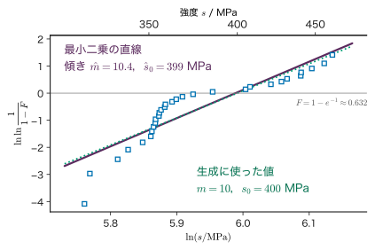
例題3.11 Weibull 係数と寸法効果
あるセラミックスの曲げ強度が，試験片の体積 $V_0$ について $m=10$，$s_0=400\ \mathrm{MPa}$ の Weibull 分布に従うとする（教育用の設定）．(1) $350\ \mathrm{MPa}$ で壊れる試験片の割合，(2) 平均強度と中央値，(3) 体積が $10V_0$ の部材の特性強度（63.2 % が壊れる強度）と，$350\ \mathrm{MPa}$ で壊れる割合を求めよ．$\Gamma(1.1)=0.9514$ を使ってよい．
解答 (1) $(350/400)^{10}=0.875^{10}=0.2631$ なので $F(350)=1-e^{-0.2631}$ $=1-0.7687=0.231$．約 23 % が壊れる．
(2) 平均 $s_0\Gamma(1+1/10)$ $=400\times0.9514=380.5\ \mathrm{MPa}$．中央値は $F=1/2$ より $(s/s_0)^{m}=\ln2$，$s=400\times(\ln2)^{1/10}$ $=400\times0.9640=385.6\ \mathrm{MPa}$．
(3) 式 \eqref{eq:3-weibull} で $V/V_0=10$．指数の中が 1 になる強度は $10(s/400)^{10}=1$ より $s=400\times10^{-1/10}=317.7\ \mathrm{MPa}$．$350\ \mathrm{MPa}$ では $F=1-\exp(-10\times0.2631)$ $=1-e^{-2.631}=0.928$ で，同じ応力でも 9 割以上が壊れる．
3.11 指数型分布族と共役事前分布の入口詳しいルート
本章の分布の多くは，見かけは違っても共通の形に書ける．
定義3.14 指数型分布族
パラメーター（自然パラメーター）$\bm{\eta}\in\R^{L}$ を持つ分布が
\begin{equation} \begin{aligned}&p(x\mid\bm{\eta})\\&=h(x)\,g(\bm{\eta})\exp\!\left(\bm{\eta}^{\tp}\bm{u}(x)\right)\end{aligned} \label{eq:3-expfam} \end{equation}の形に書けるとき，指数型分布族に属するという．$\bm{u}(x)\in\R^{L}$ はデータの関数，$h(x)$ は $\bm{\eta}$ に依らない関数，$g(\bm{\eta})$ は正規化のための係数である．
例を 3 つ挙げる．
- Bernoulli 分布：$\mu^{x}(1-\mu)^{1-x}=(1-\mu)\exp\!\left(x\ln\dfrac{\mu}{1-\mu}\right)$．よって $\eta=\ln\dfrac{\mu}{1-\mu}$，$u(x)=x$，$h(x)=1$，$g(\eta)=1-\mu$．$\eta$ を $\mu$ について解くと $\mu=\dfrac{1}{1+e^{-\eta}}$，これが sigmoid 関数 $\sigma(\eta)$ である（ここでの $\sigma$ は標準偏差ではない）．第9章のロジスティック回帰は，この $\eta$ を入力の 1 次式で表すモデルである．
- Poisson 分布：$\dfrac{\lambda^{m}e^{-\lambda}}{m!}=\dfrac{1}{m!}e^{-\lambda}\exp(m\ln\lambda)$．よって $\eta=\ln\lambda$，$u(m)=m$，$h(m)=1/m!$，$g(\eta)=\exp(-e^{\eta})$．
- Gauss 分布：指数の中を展開すると $-\dfrac{(x-\mu)^{2}}{2\sigma^{2}}=\dfrac{\mu}{\sigma^{2}}x-\dfrac{1}{2\sigma^{2}}x^{2}-\dfrac{\mu^{2}}{2\sigma^{2}}$ なので，$\bm{\eta}=\left(\dfrac{\mu}{\sigma^{2}},\,-\dfrac{1}{2\sigma^{2}}\right)^{\tp}$，$\bm{u}(x)=(x,\,x^{2})^{\tp}$，$h(x)=1$，$g(\bm{\eta})=\dfrac{1}{\sqrt{2\pi\sigma^{2}}}\exp\!\left(-\dfrac{\mu^{2}}{2\sigma^{2}}\right)$（$\mu,\sigma^{2}$ は $\bm{\eta}$ で書き直せる）．
Cauchy 分布と t 分布（自由度を固定しても）はこの形に書けない．
指数型分布族の大事な性質は，i.i.d. の $N$ 個のデータの尤度が
$$ \begin{aligned} p(\data\mid\bm{\eta})=&\left(\prod_{n=1}^{N}h(x_n)\right)\\ &\times g(\bm{\eta})^{N}\exp\!\left(\bm{\eta}^{\tp}\sum_{n=1}^{N}\bm{u}(x_n)\right) \end{aligned} $$となり，$\bm{\eta}$ に関わる部分がデータの和 $\sum_n\bm{u}(x_n)$ だけを通してデータに依存することである．この和を十分統計量という．Gauss 分布なら $\sum_nx_n$ と $\sum_nx_n^{2}$，Bernoulli 分布なら成功の回数 $\sum_nx_n$ がわかれば，データの並び方は推定に要らない．
さらに，事前分布を尤度と同じ形
$$ p(\bm{\eta}\mid\bm{\chi},\nu_0)\propto g(\bm{\eta})^{\nu_0}\exp\!\left(\nu_0\,\bm{\eta}^{\tp}\bm{\chi}\right) $$に選ぶと，尤度との積が $g(\bm{\eta})^{\nu_0+N}\exp\!\bigl(\bm{\eta}^{\tp}(\nu_0\bm{\chi}+\sum_n\bm{u}(x_n))\bigr)$ となり，事後分布も同じ形に収まる．$\nu_0$ は「事前分布が何個分の仮想的なデータに相当するか」，$\bm{\chi}$ は「その仮想的なデータの $\bm{u}$ の平均」と読める．このような事前分布を共役事前分布という．具体的な組を表3.1 にまとめた．これらを使った推定の計算は次の第4章で行う．
| データの分布（尤度） | 推定するパラメーター | 共役事前分布 | 本書で扱う所 |
|---|---|---|---|
| Bernoulli・二項 | 成功の確率 $\mu$ | Beta | 第4章 4.4 節 |
| カテゴリカル・多項 | 確率のベクトル $\bm{\mu}$ | Dirichlet | 第17章（混合係数） |
| Poisson | 率 $\lambda$ | Gamma | 第4章 演習4.3 |
| Gauss（分散は既知） | 平均 $\mu$ | Gauss | 第4章 4.6 節 |
| Gauss（平均は既知） | 精度 $1/\sigma^{2}$ | Gamma | 3.9 節（t 分布の混合） |
例題3.12 Gauss 分布の十分統計量
ある試料の格子定数を 4 回測り，$2.0,\ 2.4,\ 1.8,\ 2.2$（基準値からのずれ，単位 $10^{-3}\ \text{Å}$）を得た（教育用の数値例）．Gauss 分布の尤度 $\prod_n\Normal(x_n\mid\mu,\sigma^{2})$ を，十分統計量 $T_1=\sum_nx_n$，$T_2=\sum_nx_n^{2}$ だけを使って書け．また，$T_1$，$T_2$ の値を求めよ．
解答 2 乗を展開して和をとると
$$ \begin{aligned} \sum_n(x_n-\mu)^{2}&=\sum_nx_n^{2}-2\mu\sum_nx_n+N\mu^{2}\\ &=T_2-2\mu T_1+N\mu^{2} \end{aligned} $$なので
$$ \begin{aligned} &\prod_{n=1}^{N}\Normal(x_n\mid\mu,\sigma^{2})\\ &=(2\pi\sigma^{2})^{-N/2}\exp\!\left[-\frac{T_2-2\mu T_1+N\mu^{2}}{2\sigma^{2}}\right]. \end{aligned} $$$N=4$，$T_1=2.0+2.4+1.8+2.2=8.4$，$T_2=4.00+5.76+3.24+4.84=17.84$．尤度の計算には，この 2 つの数と $N$ があれば十分である．
3.12 材料工学・物性物理学との接点 — 計数統計，スペクトル線形，破壊強度詳しいルート
3.12.1 XRD・XPS のカウントと Poisson 分布
X 線回折（XRD）では回折した X 線の光子を，X 線光電子分光（XPS）では試料から飛び出した電子を，検出器で 1 個ずつ数える．1 個 1 個の検出はまれで互いに独立なので，一定時間のカウント数は Poisson 分布に従うとみなせる（3.4 節）．このことから，測定の実務で次のことが言える．
- 誤差棒は $\sqrt{m}$：カウント数 $m$ の標準偏差は $\sqrt{m}$ と見積もれる．スペクトルの 1 点ごとに誤差棒の大きさが違い，強度の大きいピークの頂上ほど絶対的な誤差は大きく，相対的な誤差は小さい．
- 差し引きでは分散が足される：ピークの正味の強度を「ピークの位置のカウント $m_{\mathrm p}$ − バックグラウンドのカウント $m_{\mathrm b}$」で求めると，2 つは独立なので $\Var[m_{\mathrm p}-m_{\mathrm b}]$ $=\Var[m_{\mathrm p}]+\Var[m_{\mathrm b}]$ $\approx m_{\mathrm p}+m_{\mathrm b}$．差は小さくなるのに，分散は足し算で大きくなる．
- 当てはめの重み：ピークを最小二乗法で当てはめるときは，点ごとの分散 $m_i$ の逆数で重みを付ける（第8章）．カウントが 10 程度より少ない所では Gauss 分布の近似が悪くなるので，Poisson 分布の尤度をそのまま使うほうがよい．
例題3.13 ピークの正味の強度の不確かさ
XRD のピークの位置で 400 カウント，すぐ脇のバックグラウンドで同じ時間に 100 カウントを得た．正味の強度と，その標準偏差・相対誤差を求めよ．また，相対誤差を 1/3 にするには，測定時間を何倍にすればよいか．
解答 正味の強度 $400-100=300$ カウント．分散は $400+100=500$，標準偏差 $\sqrt{500}\approx22.4$ カウント．相対誤差 $22.4/300\approx7.5\ \%$．測定時間を $k$ 倍にすると，正味の強度は $300k$，標準偏差は $\sqrt{500k}$ なので，相対誤差は $1/\sqrt{k}$ 倍になる．1/3 にするには $k=9$ 倍が必要である．バックグラウンドを差し引かずに 400 カウントだけで見積もった相対誤差 $\sqrt{400}/400=5\ \%$ は，不確かさを過小に見積もっている．
3.12.2 スペクトル線形 — Gauss 型と Lorentz 型を取り違えると
分光のピークの形（線形）は，広がりの原因によって決まる（原因ごとの線形の導き方は文献 5 の第3章にまとまっている）．
- Lorentz 型：励起状態の寿命 $\tau$ が有限であることによる広がり（自然幅．角振動数での半値全幅が $1/\tau$，エネルギーでは $\hbar/\tau$．3.7.1 項の $\gamma$ は $1/(2\tau)$ に当たる）や，気体の原子・分子の衝突による広がり．3.7 節の Cauchy 分布と同じ形で，裾が重い．
- Gauss 型：多数の小さな独立な要因の和による広がり．気体の原子の熱運動による Doppler 広がり（Maxwell 分布では視線方向の速度成分が Gauss 分布に従うため），装置の分解能（装置関数が Gauss 型で近似できる場合），試料の中の局所的な環境のばらつき．
- Voigt 型：両方の原因がある場合．観測されるピークの位置のずれは，Lorentz 型のずれと Gauss 型のずれの独立な和なので，その分布は 2 つの密度の畳み込みになる（3.5.4 項：独立な和の特性関数は積で，ここでは $\exp(-\gamma\abs{k}-\sigma^{2}k^{2}/2)$）．これを Voigt 型という．Voigt 型の畳み込みの積分は初等関数で書けないので，Gauss 型と Lorentz 型を重み付きで足し合わせた擬 Voigt 関数で代用することがある．粉末 XRD のピークの形が擬 Voigt 関数でよく表せることは文献 7 が示している．Voigt 型の半値全幅 $f_{\mathrm V}$ は，Gauss 型の半値全幅 $f_{\mathrm G}$ と Lorentz 型の半値全幅 $f_{\mathrm L}$ から近似式 $f_{\mathrm V}\approx0.5346f_{\mathrm L}$ $+\sqrt{0.2166f_{\mathrm L}^{2}+f_{\mathrm G}^{2}}$（誤差 0.02 % 程度．文献 6）で見積もれる．図3.12 の Voigt 型（$f_{\mathrm G}=2.355$，$f_{\mathrm L}=2$）では，数値で求めた 3.601 に対して近似式も 3.601 を与える．
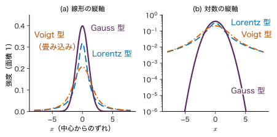
本当は Lorentz 型のピークを Gauss 型で当てはめるとどうなるか．ピークの高さと半値全幅を合わせても，面積（積分強度）は Lorentz 型の $\pi\gamma h$ に対して Gauss 型は $\sqrt{2\pi}\,\sigma h$（$\sigma=\gamma/\sqrt{2\ln2}$，$h$ は高さ）しかなく，その比は $\sqrt{\pi/\ln2}/\pi\approx0.678$ である．つまり積分強度を約 32 % 小さく見積もる．その分の強度は裾にあり，Lorentz 型では中心から $\pm3\gamma$ の外に面積の 20.5 % があるのに，Gauss 型の当てはめはそこを 0.04 % しか見込まない（演習3.8）．積分強度を使う定量分析や近接ピークの分離では，この違いが結果を左右する．
3.12.3 破壊強度の Weibull 統計
3.10.2 項の最弱リンクの考え方は，脆い材料の強度のばらつきを扱う標準的な道具になっている．実務では，同じ条件で作った十数本〜数十本の試験片の曲げ強度を測り，Weibull プロット（図3.11）から $m$ と $s_0$ を求める．ここで分布の型を知っていることが，次のように役立つ．
- 設計で許される応力：「破壊確率を $10^{-4}$ 以下にしたい」という要求は，分布の裾の話である．平均強度 ± 標準偏差の Gauss 分布で見積もると，裾の形が違うために大きく外れうる．式 \eqref{eq:3-weibull} を $F=10^{-4}$ について解けば，$s=s_0[-\ln(1-10^{-4})]^{1/m}\approx s_0\,(10^{-4})^{1/m}$ である．ただし，これは測った十数本の範囲をはるかに超えた外挿であり，$m$ の推定の不確かさが結果に大きく効く（第4章で推定の不確かさを扱う）．
- 寸法効果：小さな試験片で求めた $s_0$ を大きな部品に使うときは，$s\propto V^{-1/m}$ で補正する（例題3.11）．
- 点が直線に乗らないとき：表面の傷と内部の気孔のように種類の違う欠陥が混じっている可能性がある．破面を観察して欠陥の種類ごとに分けて考える．
3.13 誤解しやすい点と適用限界詳しいルート
注意：何でも Gauss 分布と仮定しない
Gauss 分布は中心極限定理に支えられた便利な分布だが，前提は「多数の独立で分散が有限な要因の和」である．(a) 負になれない量（カウント数，強度，粒径），(b) 上下限のある量（割合，相対密度），(c) まれに大きく外れる量（裾の重い分布）に Gauss 分布を当てはめると，負の強度や 100 % を超える相対密度に確率を割り振ったり，外れ値の起こりやすさを何桁も小さく見積もったりする．ヒストグラムを描く，縦軸を対数にして裾を見る，残差の分布を確かめる，といった確認をしてから分布を選ぶ．最小二乗法は Gauss 分布のノイズの仮定と結びついている（第8章）ので，この注意は回帰にもそのまま当てはまる．
注意：「平均 ± 標準偏差」が意味を持たない分布がある
Cauchy 分布や自由度 2 以下の t 分布では，平均や分散が存在しない．このような分布から得たデータの標本平均・標本標準偏差は，計算すれば何かの数値になるが，標本を増やしても落ち着かない（シミュレーター3.2）．また，平均と分散が存在しても，Weibull 係数の小さい強度や右に長く裾を引く粒径のように非対称な分布では，「平均 ± 標準偏差」の区間は確率についての情報をほとんど伝えない．そのときは中央値と四分位点（または 2.5 % 点と 97.5 % 点）で報告する．
注意：Poisson 分布が使える条件を確かめる
「カウントだから Poisson 分布」とは限らない．Poisson 分布の前提は，事象が独立に，一定の率で起こることである．(a) 検出器には，1 個を数えた直後のしばらく次を数えられない不感時間があり，計数率が高いと数え落としが起こって分散が平均より小さくなる．(b) 線源の強度の揺らぎ，試料の位置ずれ，粒の大きな粉末で回折に寄与する粒の数が少ないこと（粒子統計）などがあると，分散が平均より大きくなる（過分散）．繰り返し測定の分散と平均を比べて確かめるとよい（例題3.14）．また，二項分布を Poisson 分布で近似してよいのは $\mu$ が小さいときで，例題3.4 のように $\mu=0.08$ でも数 % の差が残る．
例題3.14 過分散を見抜く
ある回折ピークの強度を，試料を詰め直しながら 10 回測ったところ，カウント数の標本平均が 50，不偏分散が 120 だった（教育用の数値例）．(1) Poisson 分布が成り立っているなら，分散はおよそいくつになるはずか．(2) Poisson 分布が成り立つとき，$D=(n-1)s^{2}/\bar{m}$（$n$ は測定回数，$s^{2}$ は不偏分散，$\bar m$ は標本平均）は近似的に自由度 $n-1$ の $\chi^{2}$ 分布に従う．$D$ を計算し，自由度 9 の $\chi^{2}$ 分布で $D$ 以上の値が出る確率が約 0.010 であることを使って判断せよ．(3) 1 回の測定の不確かさとして $\sqrt{50}$ を使うとどうなるか．
解答 (1) Poisson 分布では分散＝平均なので，分散はおよそ 50 になるはずである．
(2) $D=9\times120/50=21.6$．Poisson 分布が正しければ 21.6 以上が出る確率は約 1 % しかないので，Poisson 分布だけでは説明できないばらつき（過分散）があると考えるのが自然である．試料の詰め直しによるずれが上乗せされていると考えられる．
(3) $\sqrt{50}\approx7.1$ は実際のばらつき $\sqrt{120}\approx11.0$ の 0.65 倍で，不確かさを過小に見積もる．
3.14 まとめ・次章への接続・演習・参考文献
3.14.1 まとめ
- 分布の読み方：定義域・パラメーター・正規化・平均と分散（とその存在条件）の順に確かめる．平均・分散が無くても，中央値・四分位点・半値全幅は使える．
- 離散の分布：Bernoulli → 二項，カテゴリカル → 多項．二項分布の $N\to\infty$，$N\mu=\lambda$ 一定の極限が Poisson 分布で，計数の相対誤差は $1/\sqrt{\lambda}$．
- Gauss 分布：独立な和も Gauss 分布．多変量では等確率の面が楕円で，周辺分布・条件付き分布も Gauss 分布になる（条件付き平均は 1 次式）．
- 裾の重い分布：Cauchy 分布は平均も分散も存在せず，標本平均が落ち着かない．t 分布は $\nu$ で裾の重さを調節する．
- 正の量・割合・強度：Gamma，Beta，Dirichlet，Weibull（最弱リンク）．指数型分布族は共役事前分布を持つ．一覧は表3.2．
| 分布 | 定義域 | パラメーター | 平均 | 分散 |
|---|---|---|---|---|
| Bernoulli | $\{0,1\}$ | $\mu\in[0,1]$ | $\mu$ | $\mu(1-\mu)$ |
| 二項 | $\{0,\dots,N\}$ | $N$，$\mu$ | $N\mu$ | $N\mu(1-\mu)$ |
| 多項（成分 $k$） | $\sum_km_k=N$ | $N$，$\bm{\mu}$ | $N\mu_k$ | $N\mu_k(1-\mu_k)$ |
| Poisson | $\{0,1,2,\dots\}$ | $\lambda\gt0$ | $\lambda$ | $\lambda$ |
| Gauss | $\R$ | $\mu$，$\sigma^{2}\gt0$ | $\mu$ | $\sigma^{2}$ |
| 多変量 Gauss | $\R^{D}$ | $\bm{\mu}$，$\bm{\Sigma}$（正定値） | $\bm{\mu}$ | $\bm{\Sigma}$ |
| Cauchy | $\R$ | $x_0$，$\gamma\gt0$ | 存在しない | 存在しない |
| 指数 | $[0,\infty)$ | $\lambda\gt0$ | $1/\lambda$ | $1/\lambda^{2}$ |
| Gamma | $(0,\infty)$ | $a\gt0$，$b\gt0$ | $a/b$ | $a/b^{2}$ |
| Beta | $[0,1]$ | $a\gt0$，$b\gt0$ | $\dfrac{a}{a+b}$ | $\dfrac{ab}{(a+b)^{2}(a+b+1)}$ |
| Student の t | $\R$ | $\mu$，$s\gt0$，$\nu\gt0$ | $\mu$（$\nu\gt1$） | $\dfrac{s^{2}\nu}{\nu-2}$（$\nu\gt2$） |
| Dirichlet（成分 $k$） | 単体 | $\bm{\alpha}$ | $\alpha_k/\alpha_0$ | $\dfrac{\alpha_k(\alpha_0-\alpha_k)}{\alpha_0^{2}(\alpha_0+1)}$ |
| Weibull | $[0,\infty)$ | $m\gt0$，$s_0\gt0$ | $s_0\Gamma(1+\frac1m)$ | $s_0^{2}[\Gamma(1+\frac2m)-\Gamma(1+\frac1m)^{2}]$ |
3.14.2 次章への接続
本章では，パラメーター（$\mu$，$\lambda$，$\sigma^{2}$ など）が分かっているものとして分布の形を調べた．実際には逆で，手元にあるのはデータであり，パラメーターは分からない．次の第4章では，第2章の尤度と Bayes の定理を本章の分布に当てはめて，データからパラメーターを推定する．Bernoulli 分布の成功率には Beta 分布（3.8 節）を，Gauss 分布の平均には Gauss 分布を事前分布として使い，3.11 節の共役性によって事後分布が閉じた形で求まることを見る．外れ値に強い推定には 3.9 節の t 分布が使われる．多変量 Gauss 分布の条件付き分布（3.6 節）は，第8章のベイズ線形回帰と第12章のガウス過程回帰で再び主役になる．
3.14.3 演習問題
演習3.1 不良数の二項分布と Poisson 近似（計算）
不良率 2 % の工程から 100 個を抜き取る．(1) 二項分布で不良 0 個の確率と 2 個以下の確率を求めよ．(2) 同じ確率を Poisson 近似（$\lambda=N\mu$）で求め，比べよ．(3) 不良数の分散を二項分布と Poisson 分布で比べよ．
ヒント：$0.98^{100}$ は $\exp(100\ln0.98)$ として計算するとよい．
演習3.2 Poisson 分布の性質（導出）
(1) $\Ex[m(m-1)(m-2)]=\lambda^{3}$ を示せ．(2) $m_1\sim\mathrm{Pois}(\lambda_1)$ と $m_2\sim\mathrm{Pois}(\lambda_2)$ が独立なら，$m_1+m_2\sim\mathrm{Pois}(\lambda_1+\lambda_2)$ であることを示せ．(3) (2) を使って，「10 秒のカウントが Poisson 分布なら 20 秒のカウントも Poisson 分布」であることを説明せよ．
ヒント：(2) は $P(m_1+m_2=n)$ $=\sum_{j=0}^{n}P(m_1=j)P(m_2=n-j)$ を二項定理でまとめる．
演習3.3 XPS の測定時間（材料の題材）
XPS のあるピークの位置で，ピークとバックグラウンドを合わせた計数率が $80\ \mathrm{s^{-1}}$，ピークのない位置で測ったバックグラウンドの計数率が $30\ \mathrm{s^{-1}}$ である（教育用の設定）．どちらも同じ時間 $t$ だけ測り，差を正味の強度とする．(1) 正味の強度の相対誤差を $t$ の式で書け．(2) 相対誤差を 1 % 以下にするには $t$ を何秒以上にすればよいか．(3) バックグラウンドが無く，計数率が $50\ \mathrm{s^{-1}}$ のピークなら何秒でよいか．両者を比べて，バックグラウンドが測定時間に与える影響を述べよ．
ヒント：カウント数は Poisson 分布に従い，差の分散は和になる（例題3.13）．
演習3.4 2 次元 Gauss 分布の周辺化と回帰（導出）
3.6.4 項の 2 次元 Gauss 分布について，(1) $\rho=0$ なら $x_a$ と $x_b$ が独立であることを示せ．(2) $x_a$ を条件にした $x_b$ の条件付き平均 $\Ex[x_b\mid x_a]$ を書き，$\Ex[x_a\mid x_b]$ の直線と $(x_a,x_b)$ 平面で同じ直線にならないことを示せ（$0\lt\abs{\rho}\lt1$）．(3) 例題3.6 の数値で 2 本の直線の傾きを $\dd x_b/\dd x_a$ の形で比べ，その違いを説明せよ．
ヒント：(1) は同時密度が積に分かれることを示す．(2) は $a$ と $b$ を入れ替えた結果を使う．
演習3.5 Mahalanobis 距離と楕円の中の確率（計算・導出）
$\bm{\mu}=\bm{0}$，$\bm{\Sigma}=\begin{pmatrix}5&2\\2&2\end{pmatrix}$ の 2 次元 Gauss 分布について，(1) $\bm{\Sigma}$ の固有値と単位固有ベクトルを求め，等確率の楕円 $\Delta=1$ の長軸・短軸の半径と向きを答えよ．(2) 点 $\bm{x}=(2,1)^{\tp}$ と $(1,-2)^{\tp}$ は原点からの通常の距離が同じである．それぞれの $\Delta^{2}$ を求めよ．(3) 2 次元 Gauss 分布で $P(\Delta\le c)=1-e^{-c^{2}/2}$ を示し，確率 95 % を含む楕円の $c$ を求めよ．
ヒント：(3) は 3.6.2 項の $y_i/\sqrt{\lambda_i}$ を極座標 $(r,\theta)$ で表して積分する．
演習3.6 Cauchy 分布の重み付き平均と中央値（導出）
$x_1,x_2$ が独立に Cauchy 分布 $(x_0,\gamma)$ に従うとする．(1) $0\le w\le1$ について $w x_1+(1-w)x_2$ も同じ Cauchy 分布に従うことを，特性関数で示せ．(2) 測定値に重みを付けて平均しても，Cauchy 分布では中心の推定がよくならないことを (1) から説明せよ．(3) Cauchy 分布の中央値と四分位範囲を求め，3 個の観測の中央値がなぜ標本平均よりよい推定量になりうるかを述べよ．
ヒント：(1) $\Ex[e^{ik(wx_1+(1-w)x_2)}]=\varphi(wk)\varphi((1-w)k)$．$w\ge0$，$1-w\ge0$ なので $\abs{wk}+\abs{(1-w)k}=\abs{k}$．
演習3.7 Weibull プロットから Weibull 係数を求める（材料の題材）
あるセラミックスの 3 点曲げ強度を 8 本測り，小さい順に 306，322，336，343，369，393，396，413 MPa を得た（教育用の合成データ：$m=10$，$s_0=400\ \mathrm{MPa}$ の Weibull 分布から numpy の default_rng(20261113) で引き，整数に丸めた）．(1) $F_i=(i-0.5)/8$ として，各点の $X_i=\ln s_i$ と $Y_i=\ln\ln(1/(1-F_i))$ を求めよ．(2) $Y$ を $X$ に最小二乗で当てはめた直線の傾きから $\hat m$ を，切片から $\hat s_0$ を求めよ．(3) 生成に使った値と比べ，8 本から求めた $m$ の信頼性について述べよ．(4) 推定した値を使い，$300\ \mathrm{MPa}$ で壊れる確率を見積もれ．
ヒント：傾きは $\hat m=\sum_i(X_i-\bar X)(Y_i-\bar Y)\big/\sum_i(X_i-\bar X)^{2}$，切片 $c=\bar Y-\hat m\bar X$，$\hat s_0=e^{-c/\hat m}$．
演習3.8 Lorentz 型のピークを Gauss 型で当てはめる（考察・材料の題材）
真の線形が Lorentz 型（高さ $h$，半値半幅 $\gamma$）のピークを，高さと半値全幅が等しい Gauss 型で表したとする．(1) 2 つの積分強度の比（Gauss 型／Lorentz 型）を求めよ．(2) 中心から $\pm3\gamma$ の外にある積分強度の割合を，それぞれについて求めよ．(3) XRD の定量分析で，2 つの相のピークの積分強度の比から相の割合を求めるとする．一方の相のピークだけが Lorentz 型の性格を強く持つとき，Gauss 型で当てはめるとどちらの相を多く見積もるか．
ヒント：Gauss 型の $\sigma$ は $\gamma/\sqrt{2\ln2}$．Gauss 型で $\pm3\gamma$ は $\pm3.53\sigma$ に当たる．
3.14.4 参考文献
- C. M. Bishop, Pattern Recognition and Machine Learning, Springer (2006)（2 章で本章の多くの分布と指数型分布族・共役事前分布を，付録B で分布の一覧を扱う）．
- W. Feller, An Introduction to Probability Theory and Its Applications, Vol. II, 2nd ed., Wiley (1971)（特性関数と，Cauchy 分布を含む裾の重い分布の理論）．
- C. E. Rasmussen and C. K. I. Williams, Gaussian Processes for Machine Learning, MIT Press (2006)（付録A に多変量 Gauss 分布の条件付き分布などの公式．著者の Web サイト gaussianprocess.org/gpml で公開されている）．
- W. Weibull, "A Statistical Distribution Function of Wide Applicability", Journal of Applied Mechanics 18, 293–297 (1951)，doi:10.1115/1.4010337（Weibull 分布を提案し，材料の強度などへの適用を示した論文）．
- W. Demtröder, Laser Spectroscopy 1: Basic Principles, 5th ed., Springer (2014)，doi:10.1007/978-3-642-53859-9（第3章 "Widths and Profiles of Spectral Lines" で自然幅・Doppler 幅・衝突による広がりと Voigt 型を扱う）．
- J. J. Olivero and R. L. Longbothum, "Empirical fits to the Voigt line width: A brief review", Journal of Quantitative Spectroscopy and Radiative Transfer 17, 233–236 (1977)，doi:10.1016/0022-4073(77)90161-3（Voigt 型の半値全幅の近似式）．
- P. Thompson, D. E. Cox, and J. B. Hastings, "Rietveld refinement of Debye–Scherrer synchrotron X-ray data from Al2O3", Journal of Applied Crystallography 20, 79–83 (1987)，doi:10.1107/S0021889887087090（粉末 X 線回折のピークの形を擬 Voigt 関数で表す）．